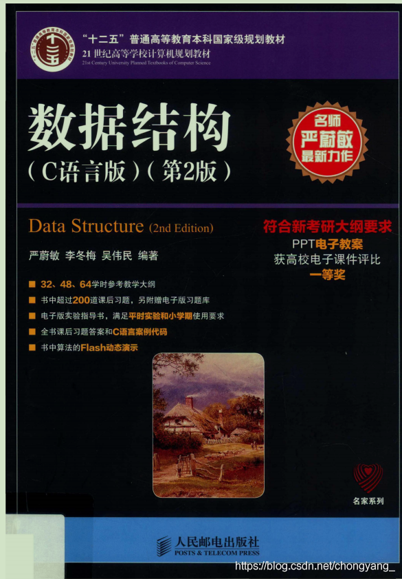
根据此书所做随笔笔记
此书PDF和习题答案： 链接 提取码：0tzc 复制这段内容后打开百度网盘手机App，操作更方便哦
一、绪论
1.1、数据结构的研究内容
- 数据的各种逻辑结构和物理结构，以及他们之间的相应关系
- 对每种结构定义相适应的各种运算
- 设计出相应的算法
- 分析算法的效率
1.2、基本概念和术语
1.2.1、数据、数据结构、数据项和数据对象
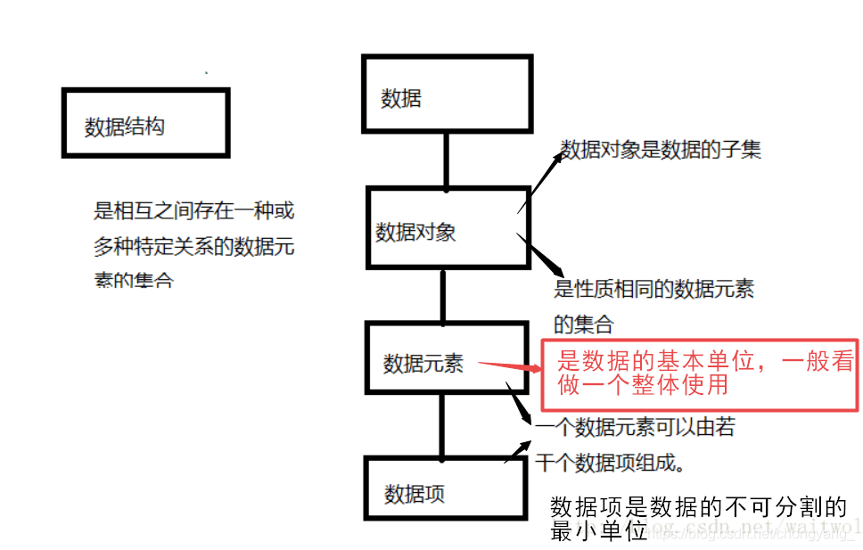
根据例子理解：假设有两张表，上表为人员表，下表为课程表， 表的格式如下：
| 姓名 | 性别 | 身高 | 课程代号 |
|---|---|---|---|
| 小明 | 男 | 180 | A |
| 小红 | 女 | 180 | A |
| 小绿 | 男 | 180 | B |
| 课程代号 | 课程名 |
|---|---|
| A | 语文 |
| B | 数学 |
这两张表就是数据 而单独的一张表就称为数据对象，即人员表是一个数据对象，课程表也是一个数据对象 而每张表中的每一行就称为数据元素 而姓名，性别，身高，课程代号，课程名就称为数据项
1.2.2数据结构
数据结构包括逻辑结构和存储结构两个层次。
数据结构是相互之间存在一种或者多种特定关系的数据元素的集合
a、逻辑结构
逻辑结构分为四种类型：集合结构，线性结构，树形结构，图形结构。
集合结构：数据元素同属一个集合，单个数据元素之间没有任何关系。

线性结构：类似于线性关系，线性结构中的数据元素之间是一对一的关系。
![]](https://img-blog.csdnimg.cn/20201108152305210.png#pic_center)
树形结构：树形结构中的数据元素之间存在一对多的关系。（各元素及元素关系所组成图形类似于树状图）。
![]](https://img-blog.csdnimg.cn/20201108152317754.png?x-oss-process=image/watermark,type_ZmFuZ3poZW5naGVpdGk,shadow_10,text_aHR0cHM6Ly9ibG9nLmNzZG4ubmV0L2Nob25neWFuZ18=,size_16,color_FFFFFF,t_70#pic_center)
图形结构：数据元素之间是多对多的关系。如下图所示。
![]](https://img-blog.csdnimg.cn/20201108152332114.png?x-oss-process=image/watermark,type_ZmFuZ3poZW5naGVpdGk,shadow_10,text_aHR0cHM6Ly9ibG9nLmNzZG4ubmV0L2Nob25neWFuZ18=,size_16,color_FFFFFF,t_70#pic_center)
b、存储结构（物理结构）
物理结构又叫存储结构，分为两种，一种是顺序存储结构一种是链式存储结构。
(1)、顺序存储结构
顺序存储结构是把数据元素放到地址连续的存储单元里面，其数据间的逻辑关系和物理关系是一致的。之前学习的数组就是一种顺序存储结构。（如图所示）
![]](https://img-blog.csdnimg.cn/20201108152347937.png#pic_center)
(2)、链式存储结构
链式存储结构：是把数据元素存放在任意的存储单元里面，这组存储单元可以是连续的也可以是不连续的。
根据指针找出相邻元素的位置 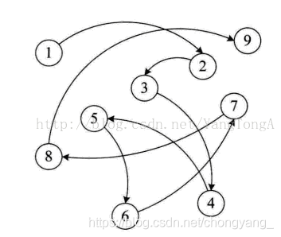
1.2.3、数据类型和抽象数据类型
a、数据类型
一般包括整型、实型、字符型等原子类型外，还有数组、结构体和指针等结构类型。
b、抽象数据类型
抽象数据类型（Abstract Data Type,ADT），类似C语言中的结构体以及C++、java语言中的类。
通俗的讲，抽象数据类型，泛指除基本数据类型以外的数据类型。
1.3、抽象数据类型的表示与实现
抽象数据类型的概念与面向对象的思想是一致的。
1.4、算法和算法分析
算法 + 数据结构 = 程序
1.4.1、算法的定义及特性
算法是为了解决某类问题而规定的一个有限长的操作序列。 一个算法必须满足以下五个重要特性： 有穷性、 确定性 、 可行性、 输入 、输出
1.4.2、评价算法优劣的基本标准
正确性 、 可读性 、 健壮性 、 高效性
1.4.3、算法的时间复杂度
详细可以看这个：一套图搞懂“时间复杂度”
看下列代码的时间复杂度： 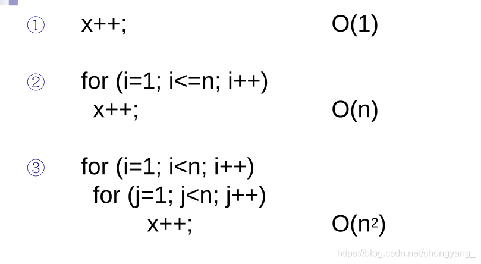
最好、最坏和平均时间复杂度
- 最好时间复杂度，指的是算法计算量可能达到的最小值。
- 最坏时间复杂度，指的是算法计算量可能达到的最大值。
- 平均时间复杂度，是指算法在所有可能情况下，按照输入实例以等概率出现时，算法计算量的加权平均值。
1.4.4、算法的空间复杂度
空间复杂度只需要分析辅助变量所占的额外空间。
空间复杂度：S(n) = O(f(n))
如果算法执行所需要的临时空间不随着某个变量n的大小而变化，即此算法空间复杂度为一个常量，可表示为 O(1) 举例：
代码中的 i、j、m 所分配的空间都不随着处理数据量变化，因此它的空间复杂度 S(n) = O(1)
我们再看一个代码：
这段代码中，第一行new了一个数组出来，这个数据占用的大小为n，这段代码的2-5行，虽然有循环，但没有再分配新的空间，因此，这段代码的空间复杂度主要看第一行即可，即 S(n) = O(n)
第一章总结
![[]](https://img-blog.csdnimg.cn/20201108152448527.jpg?x-oss-process=image/watermark,type_ZmFuZ3poZW5naGVpdGk,shadow_10,text_aHR0cHM6Ly9ibG9nLmNzZG4ubmV0L2Nob25neWFuZ18=,size_16,color_FFFFFF,t_70#pic_center)
数据，数据对象和数据元素、数据项的关系如下

数据结构是相互之间存在一种或者多种特定关系的数据元素的集合。同样是结构，从不同角度来讨论，会有不同的分类，如图所示：

算法是为了解决某类问题而规定的一个有限长的操作序列。
算法具有五个特性：有穷性、确定性、可行性、输入和输出。
一个算法的优劣应该从以下四方面来评价：正确性、可读性、健壮性和高效性。
算法分析的重点方面是分析算法的时间复杂度
第一章课后习题
1．简述下列概念：数据、数据元素、数据项、数据对象、数据结构、逻辑结构、存储结构、抽象数据类型。
数据：是客观事物的符号表示，指所有能输入到计算机中并被计算机程序处理的符号的总称。 数据元素：是数据的基本单位，在计算机中通常作为一个整体进行考虑和处理。在有些情况下，数据元素也称为元素、结点、记录等。 数据项：是组成数据元素的、有独立含义的、不可分割的最小单位。 数据对象：是性质相同的数据元素的集合，是数据的一个子集。 数据结构：是相互之间存在一种或多种特定关系的数据元素的集合。 逻辑结构：从逻辑关系上描述数据，它与数据的存储无关，是独立于计算机的。 存储结构：数据对象在计算机中的存储表示，也称为物理结构。 抽象数据类型：由用户定义的，表示应用问题的数学模型，以及定义在这个模型上的一组操作的总称。具体包括三部分：数据对象、数据对象上关系的集合和对数据对象的基本操作的集合。
2．试举一个数据结构的例子，叙述其逻辑结构和存储结构两方面的含义和相互关系。
例如有一张学生基本信息表，包括学生的学号、姓名、性别、籍贯、专业等。每个学生基本信息记录 对应一个数据元素，学生记录按顺序号排列，形成了学生基本信息记录的线性序列。对于整个表来说，只有一个开始结点(它的前面无记录)和一个终端结点(它的后面无记录)，其他的结点则各有一个也只有一个直接前趋和直接后继。学生记录之间的这种关系就确定了学生表的逻辑结构，即线性结构。 这些学生记录在计算机中的存储表示就是存储结构。如果用连续的存储单元(如用数组表示)来存放这些记录，则称为顺序存储结构；如果存储单元不连续，而是随机存放各个记录，然后用指针进行链接，则称为链式存储结构。 即相同的逻辑结构，可以对应不同的存储结构。
3．简述逻辑结构的四种基本关系并画出它们的关系图。
（1）集合结构
数据元素之间除了“属于同一集合”的关系外，别无其他关系。例如，确定一名学生是否为班级成员，只需将班级看做一个集合结构。 （2）线性结构
数据元素之间存在一对一的关系。例如，将学生信息数据按照其入学报到的时间先后顺序进行排列，将组成一个线性结构。 （3）树结构
数据元素之间存在一对多的关系。例如，在班级的管理体系中，班长管理多个组长，每位组长管理多名组员，从而构成树形结构。 （4）图结构或网状结构
数据元素之间存在多对多的关系。例如，多位同学之间的朋友关系，任何两位同学都可以是朋友，从而构成图形结构或网状结构。 其中树结构和图结构都属于非线性结构。

4．存储结构由哪两种基本的存储方法实现？
（1）顺序存储结构 顺序存储结构是借助元素在存储器中的相对位置来表示数据元素之间的逻辑关系，通常借助程序设计语言的数组类型来描述。 （2）链式存储结构 顺序存储结构要求所有的元素依次存放在一片连续的存储空间中，而链式存储结构，无需占用一整块存储空间。但为了表示结点之间的关系，需要给每个结点附加指针字段，用于存放后继元素的存储地址。所以链式存储结构通常借助于程序设计语言的指针类型来描述。
5．选择题
（1）在数据结构中，从逻辑上可以把数据结构分成（ ）。
A．动态结构和静态结构 B．紧凑结构和非紧凑结构
C．线性结构和非线性结构 D．内部结构和外部结构
答案：C
（2）与数据元素本身的形式、内容、相对位置、个数无关的是数据的（ ）。
A．存储结构 B．存储实现
C．逻辑结构 D．运算实现
答案：C
（3）通常要求同一逻辑结构中的所有数据元素具有相同的特性，这意味着（ ）。
A．数据具有同一特点
B．不仅数据元素所包含的数据项的个数要相同，而且对应数据项的类型要一致
C．每个数据元素都一样
D．数据元素所包含的数据项的个数要相等
答案：B
（4）以下说法正确的是（ ）。
A．数据元素是数据的最小单位
B．数据项是数据的基本单位
C．数据结构是带有结构的各数据项的集合
D．一些表面上很不相同的数据可以有相同的逻辑结构
答案：D
解释：数据元素是数据的基本单位，数据项是数据的最小单位，数据结构是带有结构的各数据元素的集合。
（5）算法的时间复杂度取决于（ ）。
A．问题的规模 B．待处理数据的初态
C．计算机的配置 D．A和B
答案：D
解释：算法的时间复杂度不仅与问题的规模有关，还与问题的其他因素有关。如某些排序的算法，其执行时间与待排序记录的初始状态有关。为此，有时会对算法有最好、最坏以及平均时间复杂度的评价。
（6）以下数据结构中，（ ）是非线性数据结构
A．树 B．字符串 C．队列 D．栈
答案：A
6．试分析下面各程序段的时间复杂度。
（1）
答案：O(1)
解释：程序的执行次数为常数阶。
（2）
答案：O(m*n)
解释：语句a[i] [j]=0; 的执行次数为m*n。
3）
答案：O(n2)
解释：语句 s+=B[i] [j]; 的执行次数为n2。
（4）
答案：O(log3n)
解释：语句i=i*3;的执行次数为log3n (有关对数公式：如果ax = N,记做 x = logaN)
设 i = i*3 执行了 x 次，则 3x = n ；故 x = log3n
（5）
答案：O(n2)
解释：语句x++;的执行次数为 n-1+n-2+……＋1= n(n-1)/2。
i = 1 时，循环执行 n-1 次
i = 2 时，循环执行 n-2 次，
i = 3 时，循环执行 n-3 次，
......
i = n-1 时，循环执行 1 次
则相加： (n-1)+(n-2)+(n-3)+......+3+2+1 = n(n-1)/2
一共有 n-1 个式子，前后相加等于 n ，则总和为 n(n-1)/2
（6）
答案：O(\(\sqrt{n}\))
解释： x≥(y+1)*(y+1) = n≥(y+1)2
开根号： \(\(\sqrt{n}≥(y+1)\)\)
\[\sqrt{n}-1≥y\]则 \(\(y≤\sqrt{n}-1\)\)
x=n; //n>1
y=0;
while(\(y≤\sqrt{n}-1\)){
1y++;}
y++;执行了\(\sqrt{n}\) 次。则时间复杂度为：O(\(\sqrt{n}\))
二、线性表
伪码书上讲的也很详细，笔记中有些就不再打了。可以看后面的案例分析中的完整代码。


2.1、线性表的定义和特点
由n (n≥0)个数据特性相同的元素构成的有限序列称为线性表，(n=0)的时候被称为空表。
2.2、案例引入
略
2.3、线性表的类型定义

2.4、线性表的顺序表示和实现
2.4.1、线性表的顺序表示
线性表的顺序存储又被称为顺序表
顺序存储表示：用一组地址连续的存储单元依次存储线性表的数据元素的方式，具有顺序存储结构的特点（数据间的逻辑关系和物理关系是一致的）
假设线性表 L 存储的起始位置为 LOC(A) ，sizeof(ElemType) 是每个数据元素所占用存储空间的大小，则表 L 所对应的顺序存储如下图：

注意：线性表中的位序是从 1 开始的，而数组中元素的下标是从 0 开始的
线性表的顺序存储结构是一种随机存取的存储结构，即通过首地址和元素序号可以在O(1) 时间内找到指定的元素
由于线性表的长度可变，且所需最大存储空间随问题的不同而不同，在C语言中通常使用动态分配的一维数组表示线性表
, 若不合理，则返回ERROR。
②、若 i 值合理，则将第 i 个数据元素 L.elem[i-1] 赋给参数 e, 通过 e返回第 i 个数据元素的传值。
顺序表取值算法的时间复杂度为 ：O(1)
三、顺序表的按值查找
①、从第一个元素起，依次和 e相比较，若找到与 e相等的元素 L.elem[i], 则查找成功，返回该元素的序号 i+l (数组下标从 0 开始)
②、若查遍整个顺序表都没有找到，则查找失败， 返回0
顺序表按值查找算法的平均时间复杂度为 O(n)
四、顺序表插入元素
在第 i 个位置插入一个元素时，需从最后一个元素即第 n 个元素开始，依次向后移动一个位置，直至第 i 个元素。

①、判断插入位置 i 是否合法(i 值的合法范围是 1≤i≤n+ I), 若不合法 则返回 ERROR。
②、判断顺序表的存储空间是否已满，若满则返回 ERROR。
③、将第n个至第 i 个位置的元素依次向后移动一个位置，空出第 i 个位置 ( i =n+l 时无需移动）。
④、将要插入的新元素e放入第i个位置。
⑤、表长加1
顺序表插入算法的平均时间复杂度为O(n)
五、顺序表删除元素
删除第 i 个元素时需将第 i+ 1 个至第 n 个元素依次向前移动一个位置 (i = n 时无需移动）

①、判断删除位置 i 是否合法（合法值为 1 ≤ i ≤n), 若不合法则返回 ERROR。
②、将第 i个至第n个的元素依次向前移动一个位置 (i = n时无需移动）
③、表长减 1
顺序表删除算法的平均时间复杂度为 O(n)
六、顺序表的合并
2.5、线性表的链式表示和实现
链式存储结构的特点：用一组任意的存储单元存储线性表的数据元素（这组存储单元可以是连续的，也可以是不连续的），存放数据元素的结点至少包括两个域（指针域、数据域），也可以包含若干个指针域和数据域。
2.5.1、单链表的定义和表示

关于带头结点的单链表及不带头节点的单链表
- 首元结点：是指链表中存储第一个数据元素的结点。
- 头结点：是在首元素结点之前附设的一个结点，其指针指向首元结点。
- 头指针：是指向链表中第一个结点的指针。若链表设有头结点，则头指针所指结点为线性表的头结点；若链表不设头结点，则头指针所指结点为该线性表的首元结点。
带头结点：

不带头结点：
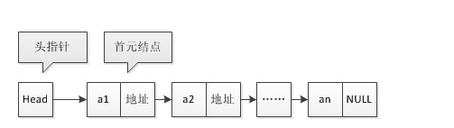
- 带头结点的单链表为空时：L->next==NULL；
- 不带头结点的单链表为空时：L=NULL;
2.5.2、单链表基本操作的实现
一、单链表的初始化
①、生成新结点作为头结点，用头指针L 指向头结点。
②、头结点的指针域置空。
二、单链表的取值
①、用指针p指向首元结点，用 j 做计数器初值赋为1
②、从首元结点开始依次顺着链域 next 向下访问，只要指向当前结点的指针 p 不为空(NULL), 并且没有到达序号为 i 的结点，则循环执行以下操作：
- p指向下一个结点；
- 计数器 j 相应加 1
③、退出循环时， 如果指针p为空， 或者计数器 j 大于 i, 说明指定的序号 i 值不合法（i 大于表长n或 i 小于等于0), 取值失败返回ERROR; 否则取值成功， 此时 j=i 时，p所指的结点就是要找的第 i 个结点，用参数 e 保存当前结点的数据域， 返回OK。
单链表取值算法的平均时间复杂度为 O(n)
三、单链表的按值查找
①、用指针p指向首元结点
②、从首元结点开始依次顺着链域next向下查找， 只要指向当前结点的指针p不为空， 并且p所指结点的数据域不等于给定值e, 则循环执行以下操作： p指向下一个结点 。
③、返回p。若查找成功，p此时即为结点的地址值，若查找失败，p的值即为NULL
单链表的按值查找算法的平均时间复杂度为 O(n)
四、单链表的插入

将值为e的新结点插入到表的第 i 个结点的位置上，即插入到结点 ai-1与ai之间。
①、查找结点 ai-1 并由指针p指向该结点
②、生成一个新结点*s
③、将新结点*s 的数据域置为 e
④、将新结点*s 的指针域指向结点ai
⑤、将结点 * p 的指针域指向新结点*s
单链表插入算法的时间复杂度为：O(n)
五、单链表的删除

删除单链表的第 i 个结点ai
①、查找结点ai-1 并由指针p指向该结点
②、临时保存待删除结点 ai 的地址在q中 ，以备释放。
③、将结点*p的指针域指向 ai 的直接后继结点
④、释放结点ai的空间
单链表删除算法的时间复杂度为： O(n)
六、创建单链表
前插法：始终让新结点在第一的位置，不常用，因为输入顺序和输出顺序是相反的。


后插法：尾指针r始终指向单链表的表尾，常用（输入顺序和输出顺序相同）

①、创建一个只有头结点的空链表。
②、尾指针r初始化， 指向头结点。
③、根据创建链表包括的元素个数n, 循环n次执行以下操作
- 生成一个新结点*p;
- 输入元素值赋给新结点*p 的数据域；
- 将新结点p 插入到尾结点r之后；
- 尾指针r指向新的尾结点*p

2.5.3、循环链表

2.5.4、双向链表
![图片转存失败,源站可能有防盗链机制,建议将图片保存下来直接上传(img-7V3NMvM9-1604820044587)(images/image-20201107172010911.png)]](https://img-blog.csdnimg.cn/20201108153217716.png?x-oss-process=image/watermark,type_ZmFuZ3poZW5naGVpdGk,shadow_10,text_aHR0cHM6Ly9ibG9nLmNzZG4ubmV0L2Nob25neWFuZ18=,size_16,color_FFFFFF,t_70#pic_center)
![片转存失败,源站可能有防盗链机制,建议将图片保存下来直接上传(img-2NfrmPru-1604820044587)(images/image-20201107200016679.png)]](https://img-blog.csdnimg.cn/20201108153229693.png#pic_center)
双向链表的插入：
![片转存失败,源站可能有防盗链机制,建议将图片保存下来直接上传(img-rB7Kp94d-1604820044588)(images/image-20201107172155836.png)]](https://img-blog.csdnimg.cn/2020110815341382.png?x-oss-process=image/watermark,type_ZmFuZ3poZW5naGVpdGk,shadow_10,text_aHR0cHM6Ly9ibG9nLmNzZG4ubmV0L2Nob25neWFuZ18=,size_16,color_FFFFFF,t_70#pic_center)
![片转存失败,源站可能有防盗链机制,建议将图片保存下来直接上传(img-WJxae4N5-1604820044589)(images/image-20201107200049373.png)]](https://img-blog.csdnimg.cn/20201108153426649.png?x-oss-process=image/watermark,type_ZmFuZ3poZW5naGVpdGk,shadow_10,text_aHR0cHM6Ly9ibG9nLmNzZG4ubmV0L2Nob25neWFuZ18=,size_16,color_FFFFFF,t_70#pic_center)
双向链表的删除：
![片转存失败,源站可能有防盗链机制,建议将图片保存下来直接上传(img-Chg7otR0-1604820044589)(images/20181104205353433.png)]](https://img-blog.csdnimg.cn/20201108153441826.png?x-oss-process=image/watermark,type_ZmFuZ3poZW5naGVpdGk,shadow_10,text_aHR0cHM6Ly9ibG9nLmNzZG4ubmV0L2Nob25neWFuZ18=,size_16,color_FFFFFF,t_70#pic_center)
![片转存失败,源站可能有防盗链机制,建议将图片保存下来直接上传(img-9bYWgMhB-1604820044590)(images/image-20201107200103616.png)]](https://img-blog.csdnimg.cn/20201108153456591.png?x-oss-process=image/watermark,type_ZmFuZ3poZW5naGVpdGk,shadow_10,text_aHR0cHM6Ly9ibG9nLmNzZG4ubmV0L2Nob25neWFuZ18=,size_16,color_FFFFFF,t_70#pic_center)
2.6、顺序表和链表的比较
![片转存失败,源站可能有防盗链机制,建议将图片保存下来直接上传(img-oBREpUd1-1604820044590)(images/image-20201107172911991.png)]](https://img-blog.csdnimg.cn/20201108153521435.png?x-oss-process=image/watermark,type_ZmFuZ3poZW5naGVpdGk,shadow_10,text_aHR0cHM6Ly9ibG9nLmNzZG4ubmV0L2Nob25neWFuZ18=,size_16,color_FFFFFF,t_70#pic_center)
2.7、线性表的应用
略
2.8、案例分析与实现
线性表的顺序实现案例：顺序表案例 线性表的链式实现案例：单链表案例
第二章小结
![转存失败,源站可能有防盗链机制,建议将图片保存下来直接上传(img-w7VKU2t7-1604820044591)(images/20161021192553027.png)]](https://img-blog.csdnimg.cn/20201108153543336.png?x-oss-process=image/watermark,type_ZmFuZ3poZW5naGVpdGk,shadow_10,text_aHR0cHM6Ly9ibG9nLmNzZG4ubmV0L2Nob25neWFuZ18=,size_16,color_FFFFFF,t_70#pic_center)
![片转存失败,源站可能有防盗链机制,建议将图片保存下来直接上传(img-rjbBfzjt-1604820044592)(images/image-20201107172911991.png)]](https://img-blog.csdnimg.cn/20201108153558343.png?x-oss-process=image/watermark,type_ZmFuZ3poZW5naGVpdGk,shadow_10,text_aHR0cHM6Ly9ibG9nLmNzZG4ubmV0L2Nob25neWFuZ18=,size_16,color_FFFFFF,t_70#pic_center)
![图片转存失败,源站可能有防盗链机制,建议将图片保存下来直接上传(img-ffAH9dH0-1604820044593)(images/image-20201107175631378.png)]](https://img-blog.csdnimg.cn/20201108153613583.png?x-oss-process=image/watermark,type_ZmFuZ3poZW5naGVpdGk,shadow_10,text_aHR0cHM6Ly9ibG9nLmNzZG4ubmV0L2Nob25neWFuZ18=,size_16,color_FFFFFF,t_70#pic_center)
第二章习题
（1）顺序表中第一个元素的存储地址是100，每个元素的长度为2，则第5个元素的地址是（ ）。
A．110 B．108 C．100 D．120
答案：B
解释：顺序表中的数据连续存储，所以第5个元素的地址为：100+2*4=108
（2）在n个结点的顺序表中，算法的时间复杂度是O(1)的操作是（ ）。
A．访问第i个结点（1≤i≤n）和求第i个结点的直接前驱（2≤i≤n）
B．在第i个结点后插入一个新结点（1≤i≤n）
C．删除第i个结点（1≤i≤n）
D．将n个结点从小到大排序
答案：A
解释：在顺序表中插入一个结点的时间复杂度都是O(n2)，排序的时间复杂度为O(n2)或O(nlog2n)。
顺序表是一种随机存取结构，访问第 i 个结点和求第 i 个结点的直接前驱都可以直接通过数组的下标直接定位，时间复杂度是O(1)
（3） 向一个有127个元素的顺序表中插入一个新元素并保持原来顺序不变，平均要移动 的元素个数为（ ）。
A．8 B．63.5 C．63 D．7
答案：B
解释：顺序表中插入元素，平均要移动的元素个数为：n/2
（4）链接存储的存储结构所占存储空间（ ）。
A．分两部分，一部分存放结点值，另一部分存放表示结点间关系的指针
B．只有一部分，存放结点值
C．只有一部分，存储表示结点间关系的指针
D．分两部分，一部分存放结点值，另一部分存放结点所占单元数
答案：A
（5）线性表若采用链式存储结构时，要求内存中可用存储单元的地址（ ）。
A．必须是连续的 B．部分地址必须是连续的
C．一定是不连续的 D．连续或不连续都可以
答案：D
（6）线性表Ｌ在（ ）情况下适用于使用链式结构实现。
A．需经常修改Ｌ中的结点值 Ｂ．需不断对Ｌ进行删除插入
C．Ｌ中含有大量的结点 Ｄ．Ｌ中结点结构复杂
答案：B
解释：链表最大的优点在于插入和删除时不需要移动数据，直接修改指针即可
（7）单链表的存储密度（ ）。
A．大于1 B．等于1 C．小于1 D．不能确定
答案：C
解释：存储密度是指一个结点数据本身所占的存储空间和整个结点所占的存储空间之比，假设单链表一个结点本身所占的空间为D，指针域所占的空间为N，则存储密度为：D/(D+N)，一定小于1。
（8）将两个各有n个元素的有序表归并成一个有序表，其最少的比较次数是（ ）。
A．n B．2n-1 C．2n D．n-1
答案：A
解释：当第一个有序表中所有的元素都小于（或大于）第二个表中的元素，只需要用第二个表中的第一个元素依次与第一个表的元素比较，总计比较n次。
（9）在一个长度为n的顺序表中，在第i个元素（1≤i≤n+1）之前插入一个新元素时须向后移动（ ）个元素。
A．n-i B．n-i+1 C．n-i-1 D．I
答案：B
(10) 线性表L=(a1，a2,……an)，下列说法正确的是（ ）。
A．每个元素都有一个直接前驱和一个直接后继
B．线性表中至少有一个元素
C．表中诸元素的排列必须是由小到大或由大到小
D．除第一个和最后一个元素外，其余每个元素都有一个且仅有一个直接前驱和直接后继。
答案：D
第一个数据元素无直接前驱，最后一个数据元素无直接后继
线性表定义中定义n = 0 时称为线性表中的空表
元素可以随机排列
(11) 创建一个包括n个结点的有序单链表的时间复杂度是（ ）。
A．O(1) B．O(n) C．O(n2) D．O(nlog2n)
答案：C
解释：单链表创建的时间复杂度是O(n)，而要建立一个有序的单链表，则每生成一个新结点时需要和已有的结点进行比较，确定合适的插入位置，所以时间复杂度是O(n2)。
(12) 以下说法错误的是（ ）。
A．求表长、定位这两种运算在采用顺序存储结构时实现的效率不比采用链式存储结构时实现的效率低
B．顺序存储的线性表可以随机存取
C．由于顺序存储要求连续的存储区域，所以在存储管理上不够灵活
D．线性表的链式存储结构优于顺序存储结构
答案：D
解释：链式存储结构和顺序存储结构各有优缺点，有不同的适用场合。
(13) 在单链表中，要将s所指结点插入到p所指结点之后，其语句应为（ ）。
A．s->next=p+1; p->next=s;
B．(* p).next=s; (* s).next=(* p).next;
C．s->next=p->next; p->next=s->next;
D．s->next=p->next; p->next=s;
答案：D
(14) 在双向链表存储结构中，删除p所指的结点时须修改指针（ ）。
A．p->next->prior=p->prior; p->prior->next=p->next;
B．p->next=p->next->next; p->next->prior=p;
C．p->prior->next=p; p->prior=p->prior->prior;
D．p->prior=p->next->next; p->next=p->prior->prior;
答案：A
(15) 在双向循环链表中，在p指针所指的结点后插入q所指向的新结点，其修改指针的操作是（ ）。
A．p->next=q; q->prior=p; p->next->prior=q; q->next=q;
B．p->next=q; p->next->prior=q; q->prior=p; q->next=p->next;
C．q->prior=p; q->next=p->next; p->next->prior=q; p->next=q;
D．q->prior=p; q->next=p->next; p->next=q; p->next->prior=q;
答案：C
三、栈和队列
3.1、栈和队列的定义和特点
3.1.1、栈的定义和特点
-
栈：受约束的线性表，只允许栈顶元素入栈和出栈
-
对栈来说，表尾端称为栈顶，表头端称为栈底，不含元素的空表称为空栈
-
先进后出，后进先出
![图片转存失败,源站可能有防盗链机制,建议将图片保存下来直接上传(img-vyaQBa5N-1604820044594)(images/image-20201108105459863.png)]](https://img-blog.csdnimg.cn/20201108153634993.png?x-oss-process=image/watermark,type_ZmFuZ3poZW5naGVpdGk,shadow_10,text_aHR0cHM6Ly9ibG9nLmNzZG4ubmV0L2Nob25neWFuZ18=,size_16,color_FFFFFF,t_70#pic_center)
3.1.2、队列的定义和特点
- 队列：受约束的线性表，只允许在队尾插入，在队头删除
- 先进先出，后进后出
![图片转存失败,源站可能有防盗链机制,建议将图片保存下来直接上传(img-oXClEWr4-1604820044596)(images/image-20201107211526109.png)]](https://img-blog.csdnimg.cn/2020110815364898.png#pic_center)
3.2、案例引入
略
3.3、栈的表示和操作的实现
3.3.1、栈的类型定义
栈也有两种存储表示方法，分别称为顺序栈和链栈。
3.3.2、顺序栈的表示和实现
顺序栈的存储结构
top 指栈顶元素后一位置
S.top == 0时，栈空
S.top == stacksize 时，栈满
一、 顺序栈的初始化
![图片转存失败,源站可能有防盗链机制,建议将图片保存下来直接上传(img-AICCR1eP-1604820044597)(images/image-20201107202759675.png)]](https://img-blog.csdnimg.cn/2020110815371368.png?x-oss-process=image/watermark,type_ZmFuZ3poZW5naGVpdGk,shadow_10,text_aHR0cHM6Ly9ibG9nLmNzZG4ubmV0L2Nob25neWFuZ18=,size_16,color_FFFFFF,t_70#pic_center)
二、顺序栈的入栈：
![图片转存失败,源站可能有防盗链机制,建议将图片保存下来直接上传(img-2iLnDfzN-1604820044598)(images/image-20201107184617878.png)]](https://img-blog.csdnimg.cn/20201108153726245.png?x-oss-process=image/watermark,type_ZmFuZ3poZW5naGVpdGk,shadow_10,text_aHR0cHM6Ly9ibG9nLmNzZG4ubmV0L2Nob25neWFuZ18=,size_16,color_FFFFFF,t_70#pic_center)
![图片转存失败,源站可能有防盗链机制,建议将图片保存下来直接上传(img-P5oPi7Ng-1604820044599)(images/image-20201107204837805.png)]](https://img-blog.csdnimg.cn/20201108153742992.png?x-oss-process=image/watermark,type_ZmFuZ3poZW5naGVpdGk,shadow_10,text_aHR0cHM6Ly9ibG9nLmNzZG4ubmV0L2Nob25neWFuZ18=,size_16,color_FFFFFF,t_70#pic_center)
三、顺序栈的出栈：
![图片转存失败,源站可能有防盗链机制,建议将图片保存下来直接上传(img-uwrWDCna-1604820044600)(images/image-20201107184707623.png)]](https://img-blog.csdnimg.cn/2020110815375898.png?x-oss-process=image/watermark,type_ZmFuZ3poZW5naGVpdGk,shadow_10,text_aHR0cHM6Ly9ibG9nLmNzZG4ubmV0L2Nob25neWFuZ18=,size_16,color_FFFFFF,t_70#pic_center)
![图片转存失败,源站可能有防盗链机制,建议将图片保存下来直接上传(img-nPl8q3RY-1604820044601)(images/image-20201107204903992.png)]](https://img-blog.csdnimg.cn/20201108153810425.png?x-oss-process=image/watermark,type_ZmFuZ3poZW5naGVpdGk,shadow_10,text_aHR0cHM6Ly9ibG9nLmNzZG4ubmV0L2Nob25neWFuZ18=,size_16,color_FFFFFF,t_70#pic_center)
四、顺序栈取栈顶元素：
![图片转存失败,源站可能有防盗链机制,建议将图片保存下来直接上传(img-ACdhQwB2-1604820044601)(images/image-20201107204935694.png)]](https://img-blog.csdnimg.cn/20201108153838812.png?x-oss-process=image/watermark,type_ZmFuZ3poZW5naGVpdGk,shadow_10,text_aHR0cHM6Ly9ibG9nLmNzZG4ubmV0L2Nob25neWFuZ18=,size_16,color_FFFFFF,t_70#pic_center)
3.3.3、链栈的表示和实现
链栈示意图：
![图片转存失败,源站可能有防盗链机制,建议将图片保存下来直接上传(img-AJZHGucx-1604820044602)(images/image-20201107205550932.png)]](https://img-blog.csdnimg.cn/20201108153853773.png#pic_center)
链栈的存储结构：
![图片转存失败,源站可能有防盗链机制,建议将图片保存下来直接上传(img-6OW6d1e1-1604820044603)(images/image-20201107205330323.png)]](https://img-blog.csdnimg.cn/20201108153908213.png#pic_center)
一、链栈的初始化
![图片转存失败,源站可能有防盗链机制,建议将图片保存下来直接上传(img-szBpHIfH-1604820044603)(images/image-20201107205619878.png)]](https://img-blog.csdnimg.cn/20201108153923298.png#pic_center)
二、链栈的入栈
![图片转存失败,源站可能有防盗链机制,建议将图片保存下来直接上传(img-8m8HH8hB-1604820044604)(images/20191219202437412.gif)]](https://img-blog.csdnimg.cn/20201108153950564.gif#pic_center)
![图片转存失败,源站可能有防盗链机制,建议将图片保存下来直接上传(img-xw22y6tO-1604820044605)(images/image-20201107205728858.png)]](https://img-blog.csdnimg.cn/20201108154008858.png?x-oss-process=image/watermark,type_ZmFuZ3poZW5naGVpdGk,shadow_10,text_aHR0cHM6Ly9ibG9nLmNzZG4ubmV0L2Nob25neWFuZ18=,size_16,color_FFFFFF,t_70#pic_center)
三、链栈的出栈
![图片转存失败,源站可能有防盗链机制,建议将图片保存下来直接上传(img-G69mqZeM-1604820044605)(images/20191219202612665.gif)]](https://img-blog.csdnimg.cn/20201108154052343.gif#pic_center)
![图片转存失败,源站可能有防盗链机制,建议将图片保存下来直接上传(img-TqWEy5l1-1604820044606)(images/image-20201107205820598.png)]](https://img-blog.csdnimg.cn/20201108154111979.png#pic_center)
四、链栈取栈顶元素
![图片转存失败,源站可能有防盗链机制,建议将图片保存下来直接上传(img-baje5i4m-1604820044606)(images/image-20201107205847613.png)]](https://img-blog.csdnimg.cn/20201108154200824.png#pic_center)
3.4、栈与递归
栈与递归知识点看小结思维导图
3.5、队列的表示和操作的实现
3.5.1、队列的类型定义
队列的操作与栈类似，不同的是，删除时在表的头部(即队头)进行。
3.5.2、循环队列——队列的顺序表示和实现
队列也有两种存储表示，顺序表示和链表表示。
队列的顺序存储结构表示：一组地址连续的存储单元存储
单纯的顺序队列有"假溢出"的问题。
![图片转存失败,源站可能有防盗链机制,建议将图片保存下来直接上传(img-T4vnyLSJ-1604820044607)(images/image-20201107212721916.png)]](https://img-blog.csdnimg.cn/2020110815421755.png?x-oss-process=image/watermark,type_ZmFuZ3poZW5naGVpdGk,shadow_10,text_aHR0cHM6Ly9ibG9nLmNzZG4ubmV0L2Nob25neWFuZ18=,size_16,color_FFFFFF,t_70#pic_center)
尾指针无法插入元素，队列的实际可用空间并未占满，这种现象称为 “假溢出＂
为了避免 ”假溢出“，可以将顺序队列变为 一 个环状的空间
- 循环队列解决了“假溢出”(下标溢出)
- 没有解决真溢出（空间溢出）
![图片转存失败,源站可能有防盗链机制,建议将图片保存下来直接上传(img-Ui7tb95D-1604820044607)(images/image-20201107211808989.png)]](https://img-blog.csdnimg.cn/20201108154232893.png?x-oss-process=image/watermark,type_ZmFuZ3poZW5naGVpdGk,shadow_10,text_aHR0cHM6Ly9ibG9nLmNzZG4ubmV0L2Nob25neWFuZ18=,size_16,color_FFFFFF,t_70#pic_center)
![图片转存失败,源站可能有防盗链机制,建议将图片保存下来直接上传(img-5JcFZspQ-1604820044608)(images/image-20201107221621840.png)]](https://img-blog.csdnimg.cn/20201108154246804.png?x-oss-process=image/watermark,type_ZmFuZ3poZW5naGVpdGk,shadow_10,text_aHR0cHM6Ly9ibG9nLmNzZG4ubmV0L2Nob25neWFuZ18=,size_16,color_FFFFFF,t_70#pic_center)
在这种情况下， 如何区别队满还是队空呢？
1、少用一个元素空间， 即队列空间大小为m时，有m-1个元素就认为是队满。这样判断队空的条件不变， 即当头、 尾指针的值相同时， 则认为队空；而当尾指针在循环意义上加1后是等于头指针， 则认为队满。
- 队空的条件： Q.front == Q.rear
- 队满的条件： (Q.rear+ 1)%MAXQSIZE == Q.front
- 入队：Q.rear = (Q.rear + 1)% MAXQSIZE
- 出队：Q.front = (Q.front + 1)% MAXQSIZE
- 当前元素个数： (Q.rear - Q.front + MAXQSIZE) % MAXQSIZE
如图 3.14 (d)所示， 当J7、 J8、 J9 进入图 3.14(a)所示的队列后， (Q.rear+ 1)%MAXQSIZE 的值等于 Q.front, 此时认为队满。
2、另设一个标志位以区别队列是 “空” 还是 “满＂。
一、循环队列的初始化
![图片转存失败,源站可能有防盗链机制,建议将图片保存下来直接上传(img-bXB5sXk6-1604820044609)(images/image-20201107222324959.png)]](https://img-blog.csdnimg.cn/20201108154301968.png?x-oss-process=image/watermark,type_ZmFuZ3poZW5naGVpdGk,shadow_10,text_aHR0cHM6Ly9ibG9nLmNzZG4ubmV0L2Nob25neWFuZ18=,size_16,color_FFFFFF,t_70#pic_center)
二、循环队列求队列长度
![图片转存失败,源站可能有防盗链机制,建议将图片保存下来直接上传(img-EARXtBwu-1604820044609)(images/image-20201107222403330.png)]](https://img-blog.csdnimg.cn/20201108154316770.png?x-oss-process=image/watermark,type_ZmFuZ3poZW5naGVpdGk,shadow_10,text_aHR0cHM6Ly9ibG9nLmNzZG4ubmV0L2Nob25neWFuZ18=,size_16,color_FFFFFF,t_70#pic_center)
三、循环队列入队
![片转存失败,源站可能有防盗链机制,建议将图片保存下来直接上传(img-UYkLDiIR-1604820044610)(images/image-20201107222431638.png)]](https://img-blog.csdnimg.cn/20201108154332340.png?x-oss-process=image/watermark,type_ZmFuZ3poZW5naGVpdGk,shadow_10,text_aHR0cHM6Ly9ibG9nLmNzZG4ubmV0L2Nob25neWFuZ18=,size_16,color_FFFFFF,t_70#pic_center)
四、循环队列出队
![图片转存失败,源站可能有防盗链机制,建议将图片保存下来直接上传(img-FMSy2xyQ-1604820044611)(images/image-20201107222508261.png)]](https://img-blog.csdnimg.cn/20201108154347786.png?x-oss-process=image/watermark,type_ZmFuZ3poZW5naGVpdGk,shadow_10,text_aHR0cHM6Ly9ibG9nLmNzZG4ubmV0L2Nob25neWFuZ18=,size_16,color_FFFFFF,t_70#pic_center)
五、循环队列取队头元素
![图片转存失败,源站可能有防盗链机制,建议将图片保存下来直接上传(img-Rwr0WPhe-1604820044611)(images/image-20201107222549800.png)]](https://img-blog.csdnimg.cn/20201108154401881.png#pic_center)
3.5.3、链队——队列的链式表示和实现
![图片转存失败,源站可能有防盗链机制,建议将图片保存下来直接上传(img-GhohPeyX-1604820044612)(images/image-20201107223731320.png)]](https://img-blog.csdnimg.cn/20201108154418988.png#pic_center)
队列的链式存储结构
![图片转存失败,源站可能有防盗链机制,建议将图片保存下来直接上传(img-ictZUjel-1604820044613)(images/image-20201107223744388.png)]](https://img-blog.csdnimg.cn/20201108154551439.png?x-oss-process=image/watermark,type_ZmFuZ3poZW5naGVpdGk,shadow_10,text_aHR0cHM6Ly9ibG9nLmNzZG4ubmV0L2Nob25neWFuZ18=,size_16,color_FFFFFF,t_70#pic_center)
一、链队的初始化
![图片转存失败,源站可能有防盗链机制,建议将图片保存下来直接上传(img-i0UL6G1B-1604820044613)(images/image-20201107224431901.png)]](https://img-blog.csdnimg.cn/20201108154602999.png?x-oss-process=image/watermark,type_ZmFuZ3poZW5naGVpdGk,shadow_10,text_aHR0cHM6Ly9ibG9nLmNzZG4ubmV0L2Nob25neWFuZ18=,size_16,color_FFFFFF,t_70#pic_center)
二、链队的入队
![图片转存失败,源站可能有防盗链机制,建议将图片保存下来直接上传(img-FPhzzVjl-1604820044614)(images/image-20201107224503504.png)]](https://img-blog.csdnimg.cn/20201108154615747.png?x-oss-process=image/watermark,type_ZmFuZ3poZW5naGVpdGk,shadow_10,text_aHR0cHM6Ly9ibG9nLmNzZG4ubmV0L2Nob25neWFuZ18=,size_16,color_FFFFFF,t_70#pic_center)
![图片转存失败,源站可能有防盗链机制,建议将图片保存下来直接上传(img-0Q6X0tMP-1604820044615)(images/image-20201107224512678.png)]](https://img-blog.csdnimg.cn/2020110815463125.png?x-oss-process=image/watermark,type_ZmFuZ3poZW5naGVpdGk,shadow_10,text_aHR0cHM6Ly9ibG9nLmNzZG4ubmV0L2Nob25neWFuZ18=,size_16,color_FFFFFF,t_70#pic_center)
三、链队的出队
链队在出队前也需要判断队列是否为空，不同的是，链队在出队后需要释放出队头元素的所占空间
①、判断队列是否为空，若空则返回ERROR。
②、临时保存队头元素的空间，以备释放。
③、修改队头指针，指向下一个结点。
④、判断出队元素是否为最后一个元素，若是，则将队尾指针重新赋值， 指向头结点。
⑤、释放原队头元素的空间。
![\图片转存失败,源站可能有防盗链机制,建议将图片保存下来直接上传(img-roOs11vM-1604820044616)(images/image-20201107224931974.png)]](https://img-blog.csdnimg.cn/20201108154645727.png?x-oss-process=image/watermark,type_ZmFuZ3poZW5naGVpdGk,shadow_10,text_aHR0cHM6Ly9ibG9nLmNzZG4ubmV0L2Nob25neWFuZ18=,size_16,color_FFFFFF,t_70#pic_center)
需要注意的是，在链队出队操作时还要考虑当队列中最后一个元素被删后，队列尾指针也丢失了，因此需对队尾指针重新赋值（指向头结点）
四、取链队的队头元素
![图片转存失败,源站可能有防盗链机制,建议将图片保存下来直接上传(img-z4pLQu0F-1604820044616)(images/image-20201107225129657.png)]](https://img-blog.csdnimg.cn/20201108154658805.png#pic_center)
3.6、案例分析与实现
第三章小结
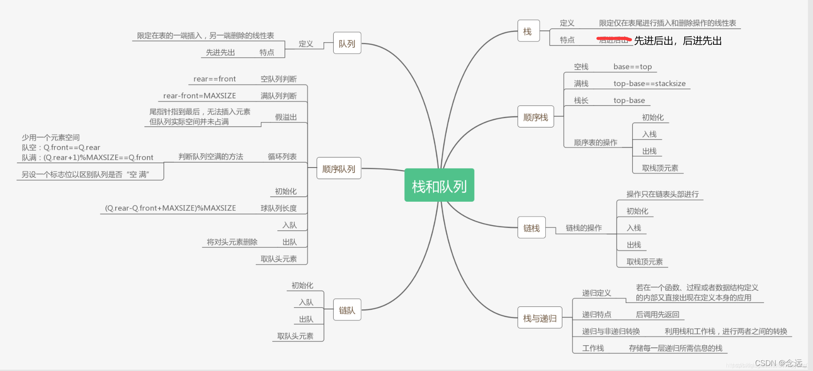
栈是限定仅在表尾进行插入或删除的线性表，又称为后进先出的线性表。栈有两种存储表示，顺序表示（顺序栈） 和链式表示（链栈）。栈的主要操作是进栈和出栈，对于顺序栈的进栈和出栈操作要注意判断栈满或栈空
队列是一种先进先出的线性表。它只允许在表的一端进行插入， 而在另一端删除元素。队列也有两种存储表示，顺序表示（循环队列）和链式表示（链队）
栈和队列的逻辑结构都和线性表一样，数据元素之间存在一对一的关系
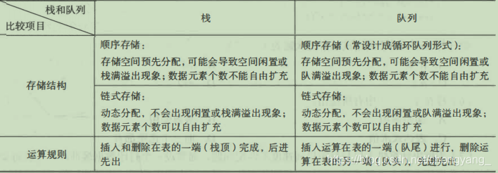
循环队列中少用一个元素判断对空或对满时：
- 队空的条件： Q.front == Q.rear
- 队满的条件： (Q.rear+ 1)%MAXQSIZE == Q.front
第三章习题
（1）若让元素1，2，3，4，5依次进栈，则出栈次序不可能出现在（ ）种情况。
A．5，4，3，2，1
B．2，1，5，4，3
C．4，3，1，2，5
D．2，3，5，4，1
答案：C
解释：栈是后进先出的线性表，不难发现C选项中元素1比元素2先出栈，违背了栈的后进先出原则，所以不可能出现C选项所示的情况。
（2）若已知一个栈的入栈序列是1，2，3，…，n，其输出序列为p1，p2，p3，…，pn，若p1=n，则pi为（ ）。
A．i B．n-i C．n-i+1 D．不确定
答案：C
解释：栈是后进先出的线性表，一个栈的入栈序列是1，2，3，…，n，而输出序列的第一个元素为n，说明1，2，3，…，n一次性全部进栈，再进行输出，所以p1=n，p2=n-1，…，pi=n-i+1。
（3）数组Ｑ［ｎ］用来表示一个循环队列，ｆ为当前队列头元素的前一位置，ｒ为队尾元素的位置，假定队列中元素的个数小于ｎ，计算队列中元素个数的公式为（ ）。
A．r-f B．(n+f-r)%n C．n+r-f D．（n+r-f)%n
答案：D
解释：对于非循环队列，尾指针和头指针的差值便是队列的长度，而对于循环队列，差值可能为负数，所以需要将差值加上MAXSIZE（本题为n），然后与MAXSIZE（本题为n）求余，即（n+r-f)%n。
（4）链式栈结点为：(data,link)，top指向栈顶.若想摘除栈顶结点，并将删除结点的值保存到x中,则应执行操作（ ）。
A．x=top->data;top=top->link； B．top=top->link;x=top->link；
C．x=top;top=top->link； D．x=top->link；
答案：A
解释：x=top->data将结点的值保存到x中，top=top->link栈顶指针指向栈顶下一结点，即摘除栈顶结点。
（5）设有一个递归算法如下
则计算fact(n)需要调用该函数的次数为（ ）。
A． n+1 B． n-1 C． n D． n+2
答案：A
解释：特殊值法。设n=0，易知仅调用一次fact(n)函数，故选A。
（6）栈在 （ ）中有所应用。
A．递归调用 B．函数调用 C．表达式求值 D．前三个选项都有
答案：D
解释：递归调用、函数调用、表达式求值均用到了栈的后进先出性质。
（7）为解决计算机主机与打印机间速度不匹配问题，通常设一个打印数据缓冲区。主机将要输出的数据依次写入该缓冲区，而打印机则依次从该缓冲区中取出数据。该缓冲区的逻辑结构应该是（ ）。
A．队列 B．栈 C． 线性表 D．有序表
答案：A
解释：解决缓冲区问题应利用一种先进先出的线性表，而队列正是一种先进先出的线性表。
（8）设栈S和队列Q的初始状态为空，元素e1、e2、e3、e4、e5和e6依次进入栈S，一个元素出栈后即进入Q，若6个元素出队的序列是e2、e4、e3、e6、e5和e1，则栈S的容量至少应该是（ ）。
A．2 B．3 C．4 D． 6
答案：B
解释：元素出队的序列是e2、e4、e3、e6、e5和e1，可知元素入队的序列是e2、e4、e3、e6、e5和e1，即元素出栈的序列也是e2、e4、e3、e6、e5和e1，而元素e1、e2、e3、e4、e5和e6依次进入栈，易知栈S中最多同时存在3个元素，故栈S的容量至少为3。
（9）若一个栈以向量V[1..n]存储，初始栈顶指针top设为n+1，则元素x进栈的正确操作是( )。
A．top++; V[top]=x; B．V[top]=x; top++;
C．top--; V[top]=x; D．V[top]=x; top--;
答案：C
解释：初始栈顶指针top为n+1，说明元素从数组向量的高端地址进栈，又因为元素存储在向量空间V[1..n]中，所以进栈时top指针先下移变为n，之后将元素x存储在V[n]。
（10）设计一个判别表达式中左，右括号是否配对出现的算法，采用（ ）数据结构最佳。
A．线性表的顺序存储结构 B．队列
C. 线性表的链式存储结构 D. 栈
答案：D
解释：利用栈的后进先出原则。
（11）用链接方式存储的队列，在进行删除运算时（ ）。
A. 仅修改头指针 B. 仅修改尾指针
C. 头、尾指针都要修改 D. 头、尾指针可能都要修改
答案：D
解释：一般情况下只修改头指针，但是，当删除的是队列中最后一个元素时，队尾指针也丢失了，因此需对队尾指针重新赋值。
（12）循环队列存储在数组A[0..m]中，则入队时的操作为（ ）。
A. rear=rear+1 B. rear=(rear+1)%(m-1)
C. rear=(rear+1)%m D. rear=(rear+1)%(m+1)
答案：D
解释：数组A[0..m]中共含有m+1个元素，故在求模运算时应除以m+1
（13）最大容量为n的循环队列，队尾指针是rear，队头是front，则队空的条件是（ ）。
A. (rear+1)%n = = front B. rear == front
C．rear+1 = = front D. (rear-l)%n == front
答案：B
解释：最大容量为n的循环队列，队满条件是(rear+1)%n = = front，队空条件是rear == front。
（14）栈和队列的共同点是（ ）。
A. 都是先进先出 B. 都是先进后出
C. 只允许在端点处插入和删除元素 D. 没有共同点
答案：C
解释：栈只允许在栈顶处进行插入和删除元素，队列只允许在队尾插入元素和在队头删除元素
（15）一个递归算法必须包括（ ）。
A. 递归部分 B. 终止条件和递归部分
C. 迭代部分 D. 终止条件和迭代部分
答案：B
四、串、数组和广义表
4.1、串的定义
串即字符串，是由零个或多个字符组成的有限序列，是数据元素为单个字符的特殊线性表。
- 串是内容受限的线性表,它限定了表中的元素为字符
- 串长：串中字符个数（n≥0）. n=0 时称为空串
- 空白串：由一个或多个空格符组成的串
- 子串：串S中任意个连续的字符序列叫S的子串; S叫主串
- 当两个串的长度相等，并且各个对应位置的字符都相等时，才称这两个串相等
4.2、案例引入
略
4.3、串的类型定义、存储结构及其运算
4.3.1、串的抽象类型定义
4.3.2、串的存储结构
①、定长顺序存储：用一组连续的存储单元来存放串，直接使用定长的字符数组来定义，数组的上界预先给出，故称为静态存储分配。 例如
C语言约定在串尾加结束符 ‘ \0’，以利操作加速，但不计入串长；
若字符串超过Maxstrlen 则自动截断（因为静态数组存不进去）
想存放超长字符串怎么办？——静态数组有缺陷。 改用动态分配的一维数组 堆
②、堆分配存储：仍用一组连续的存储单元来存放串，但存储空间是在程序执行过程中动态按需分配而得
三、链式存储
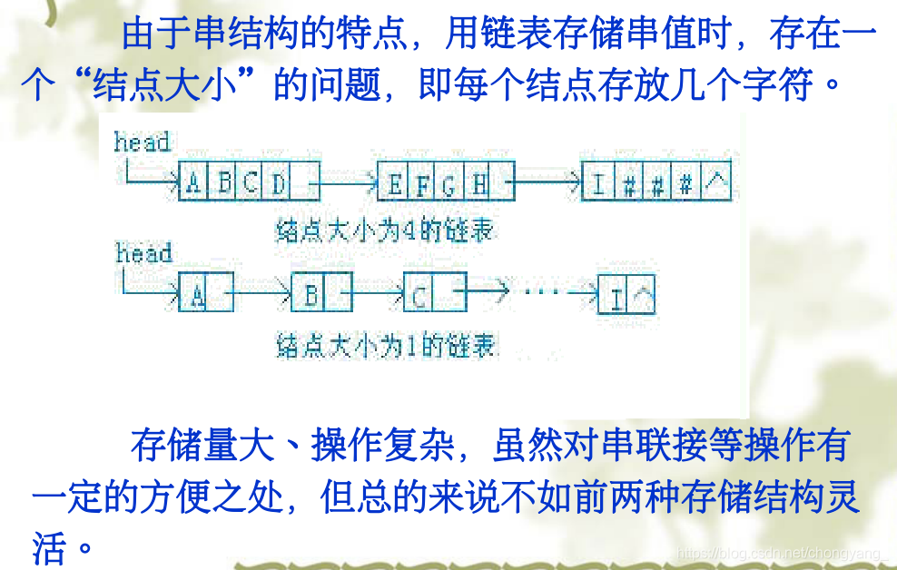
4.3.3、串的模式匹配算法
课时缩短，计划中不讲也不学这个。
想学的话跳转链接：串的总结
4.4、数组
数组是线性表的推广，特点是结构中的元素本身可以是具有某种结构的数据，但属于同一数据类型
1．一维数组 一维数组可看成是一个线性表或一个向量，存储在一块连续的存储单元中，适合于随机查找。一维数组记为A[n]或A=(a0，al，…ai，…，an-1) ，一维数组中ai的存储地址LOC(ai)可由下式求出： LOC(ai)=LOC(a0)+i*L (0≤i<n) 2．二维数组 二维数组，又称矩阵(matrix)。每个元素又是一个定长的线性表（一维数组），都要受到两个关系即行关系和列关系的约束，也就是每个元素都同属于两个线性表。例如，设A是一个有m行n列的二维数组，A可以看成由m个行向量组成的向量，也可以看由n个列向量组成的向量。
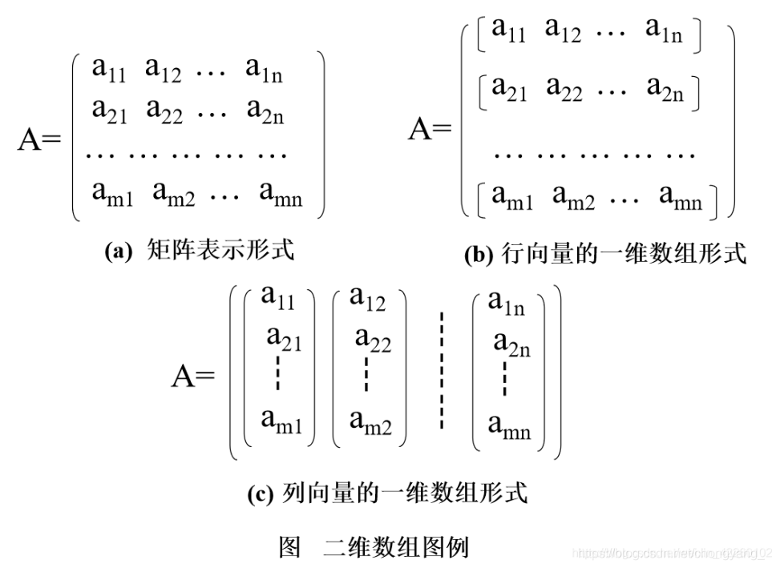
一个二维数组可以看作是每个数据元素类型相都同的一维数组。以此类推，任何多维数组都可以看作一个线性表，这时线性表中的每个数据元素也是一个线性表。多维数组是特殊的线性表，是线性表的推广。
链接：数组和广义表详细知识点
4.5、广义表
广义表是线性表的推广，也称为列表。
广义表是n(n≥0)个元素的一个序列，表中的元素可以是称为原子的单个元素，也可以是一个子表
若n=0时则称为空表。设ai为广义表的第i个元素，则广义表的一般表示与线性表相同
其中==n==表示广义表的==长度==，n≥0。ai可以是单个元素，也可以是广义表
如果ai是单个数据元素，则ai是广义表LS的原子；如果ai是一个广义表，则ai是广义表LS的子表
习惯上，用大写字母表示广义表的名称，用小写字母表示原子
广义表的长度（广度）指：广义表中所包含的数据元素的个数 例如，在广义表 (a,(b,c,d)) 中，它包含一个原子和一个子表，因此该广义表的长度为 2。 再比如，广义表 ((a,b,c)) 中只有一个子表 (a,b,c)，因此它的长度为 1。
广义表的==深度==，可以通过观察该表中所包含括号的层数间接得到。这里需要注意，数左括号（或右括号）时同一层次的多个括号只计算一次
比如：广义表 ((1,2),(3,(4,5))) 中，此广义表中包含 3 层括号，因此深度为 3
广义表深度 = 匹配最多括号的元素所匹配的括号对数，如上例子中的 4 和 5 都匹配了 3 对括号。
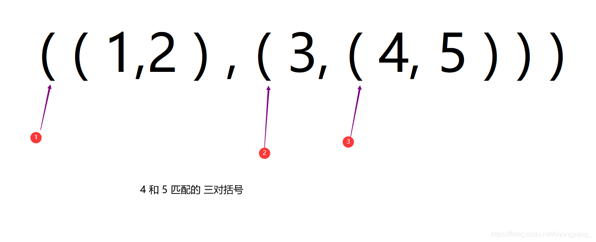
题目1：广义表 (a,(a,b),d,e, ((i,j),k) ) 的长度是（ ），深度是（ ） 其长度为5、深度为3、为什么呢？
长度的求法为最大括号中的逗号数加1 即为： a 后面的逗号， (a,b) 后面的逗号， d 后面的逗号， e 后面的逗号，((i,j),k) 前面的逗号， 总计有四个，那么广义表的长度是4+1=5;
深度的求法为上面每个元素的括号匹配数加1的最大值 a为0+1=1; (a,b)为1+1=2; d,e类似a; ==((i,j),k)==为2+1=3; 故深度为3。 原文：https://blog.csdn.net/w_k_l/article/details/78983957
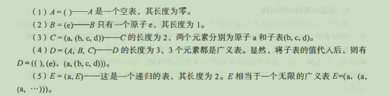
广义表三个重要结论 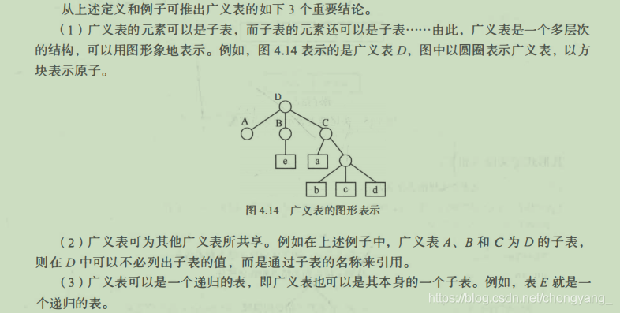
取表头GetHead(LS)：取出表头为非空广义表的第一个元素，它可以是一个单原子，也可以是一个子表
取表尾GetTail(LS)：取出的表尾为除去表头之外，由其余元素构成的表。即表尾一定是一个广义表 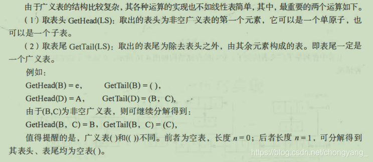
已知广义表: A=(a,b), B=(A,A), C=(a,(b,A),B), 求下列运算的结果:
tail(head(tail(C))) =( )
head() 返回列表的第一个元素；
tail() 返回列表的删去第一个元素之后的剩余列表；
所以，
tail(C)=((b,A),B);
head(tail(C))=head( ((b,A),B) )=(b,A)
tail (head(tail(C)) )=tail( (b,A) )=(A)
注意，head返回的是元素 (去掉最外层括号) 此元素可以是原子也可能是子表，tail返回的是表(保留最外层括号)。
广义表（ ）和 (( )) 不同。前者为空表，长度n = O; 后者长度 n = 1, 可分解得到其表头、 表尾均为空表（）
第四章小结
- 串是内容受限的线性表，它限定了表中的元素为字符
- 多维数组可以看成是线性表的推广，其特点是结构中的元素本身可以是具有某种结构的数据，但属于用一数据类型
- 广义表是另一种线性表的推广形式，表中的元素可以是称为原子的单个元素，也可以是一个子表，所以线性表可以看成广义表的特例
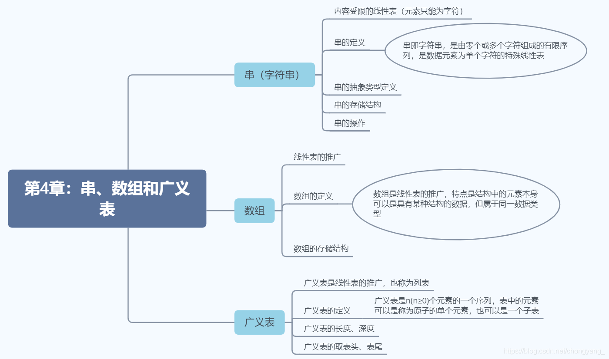
第四章习题
（1）串是一种特殊的线性表，其特殊性体现在（ ）。
A．可以顺序存储 B．数据元素是一个字符
C．可以链式存储 D．数据元素可以是多个字符若
答案：B
串是内容受限的线性表，表中元素只能存字符
（2）串下面关于串的的叙述中，（ ）是不正确的？
A．串是字符的有限序列 B．空串是由空格构成的串
C．模式匹配是串的一种重要运算 D．串既可以采用顺序存储，也可以采用链式存储
答案：B
解释：空格常常是串的字符集合中的一个元素，有一个或多个空格组成的串成为空格串，零个字符的串成为空串，其长度为零。
（3）串“ababaaababaa”的next数组为（ ）。
A．012345678999 B．012121111212 C．011234223456 D．0123012322345
答案：C
（4）串“ababaabab”的nextval为（ ）。
A．010104101 B．010102101 C．010100011 D．010101011
答案：A
（5）串的长度是指（ ）。
A．串中所含不同字母的个数 B．串中所含字符的个数 //可以空格也可以相同
C．串中所含不同字符的个数 D．串中所含非空格字符的个数
答案：B
解释：串中字符的数目称为串的长度。
（6）假设以==行序==为主序存储二维数组A=array[1..100,1..100]，设每个数据元素占2个存储单元，基地址为10，则LOC[5,5]=（ ）。
A．808 B．818 C．1010 D．1020
答案：B
解释：以行序为主，则LOC[5,5]=[（5-1）100+（5-1）]2+10=818。
（7）设有数组A[i,j]，数组的每个元素长度为3字节，i的值为1到8，j的值为1到10，数组从内存首地址BA开始顺序存放，当用以==列==为主存放时，元素A[5,8]的存储首地址为（ ）。
A．BA+141 B．BA+180 C．BA+222 D．BA+225
答案：B
解释：以列序为主，则LOC[5,8]=[（8-1）8+（5-1）]3+BA=BA+180。
（8）设有一个10阶的对称矩阵A，采用压缩存储方式，以行序为主存储，a11为第一元素，其存储地址为1，每个元素占一个地址空间，则a85的地址为（ ）
A．13 B．32 C．33 D．40
答案：C
解释：1+2+3+...+7+5 = 33
（9）若对n阶对称矩阵A以行序为主序方式将其下三角形的元素(包括主对角线上所有元素)依次存放于一维数组B[1..(n(n+1))/2]中，则在B中确定aij（i<j）的位置k的关系为（ ）。
A．i(i-1)/2+j B．j(j-1)/2+i C．i(i+1)/2+j D．j(j+1)/2+i
答案：B
（10）二维数组A的每个元素是由10个字符组成的串，其行下标i=0,1,…,8,列下标j=1,2,…,10。若A按行先存储，元素A[8,5]的起始地址与当A按列先存储时的元素（ ）的起始地址相同。设每个字符占一个字节。
A．A[8,5] B．A[3,10] C. A[5,8] D．A[0,9]
答案：B
解释：设数组从内存首地址M开始顺序存放，若数组按行先存储，元素A[8,5]的起始地址为：M+[（8-0）10+（5-1）]1=M+84；若数组按列先存储，易计算出元素A[3,10]的起始地址为：M+[（10-1）9+（3-0）]1=M+84。故选B。
（11）设二维数组A[1.. m，1.. n]（即m行n列）按行存储在数组B[1.. m*n]中，则二维数组元素A[i,j]在一维数组B中的下标为（ ）。
A．(i-1)n+j B．(i-1)n+j-1 C．i(j-1) D．jm+i-1
答案：A
解释：特殊值法。取i=j=1，易知A[1,1]的的下标为1，四个选项中仅有A选项能确定的值为1，故选A。
（12）数组A[0..4,-1..-3,5..7]中含有元素的个数（ ）。
A．55 B．45 C．36 D．16
答案：B
解释：共有5 * 3 * 3=45个元素。
（13）广义表A=(a,b,(c,d),(e,(f,g)))，则Head(Tail(Head(Tail(Tail(A)))))的值为（ ）。
A．(g) B．(d) C．c D．d
答案：D
解释：Tail(A)=(b,(c,d),(e,(f,g)))；Tail(Tail(A))=( (c,d),(e,(f,g)))； Head(Tail(Tail(A)))= (c,d)；Tail(Head(Tail(Tail(A))))=(d)；Head(Tail(Head(Tail(Tail(A)))))=d。
（14）广义表((a,b,c,d))的表头是（ ），表尾是（ ）。
A．a B．( ) C．(a,b,c,d) D．(b,c,d)
答案：C、B
解释：表头为非空广义表的第一个元素，可以是一个单原子，也可以是一个子表，((a,b,c,d))的表头为一个子表(a,b,c,d)；表尾为除去表头之外，由其余元素构成的表，表为一定是个广义表，((a,b,c,d))的表尾为空表( )。
eg：
TAIL[HEAD[TAIL[((a,b),(c,d))]]]
- 首先，
TAIL[((a,b),(c,d))]是去掉第一个元素(a,b)后的剩余部分，即((c, d))。- 接着，
HEAD[((c, d))]取的是(c, d)。- 然后
TAIL[(c, d)]是(c, d)除去第一个元素的部分，因此TAIL[(c, d)]是d。- 结果：
d
（15）设广义表L=((a,b,c))，则L的长度和深度分别为（ ）。
A．1和1 B．1和3 C．1和2 D．2和3
答案：C
解释：广义表的深度是指广义表中展开后所含括号的层数，广义表的长度是指广义表中所含元素的个数。根据定义易知L的长度为1，深度为2
五、树和二叉树
5.1、树和二叉树的定义
5.1.1、树的定义
-
树是一种非线性的数据结构,它是由n个有限结点组成有层次关系的集合.
-
树具有以下特点，可以根据这些特点来判断一个数据结构是否是树
•每个结点具有0个或多个子结点 •每个子结点只有一个父结点 •没有前驱的结为根结点 •除了根结点外，每个子结点又可以由m棵不相关的子树组成
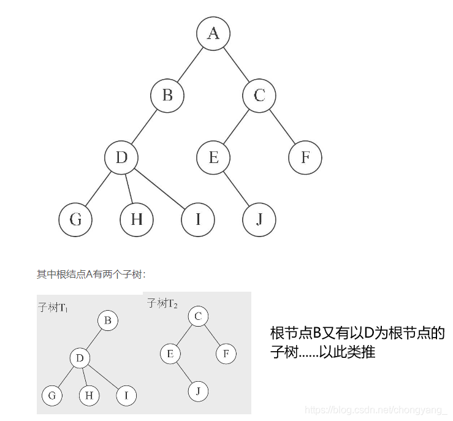
每个结点最多有一个父结点
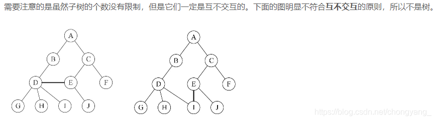
5.1.2、树的基本术语
- 结点的度：结点拥有的子树数量称为结点的度
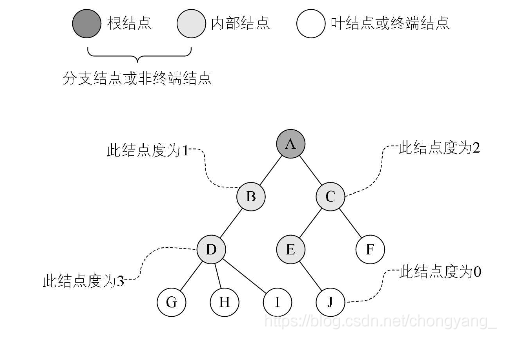
-
树的度：树内各结点度的最大值，即上图 D 结点的度就是此树的度
-
叶子：度为 0 的节点称为叶子或终端节点
-
结点的层次和树的深度
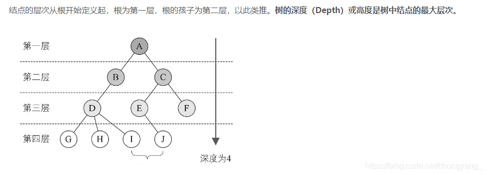
- 森林：m棵互不相交的树的集合。
5.1.3、二叉树的定义
二叉树与数主要有以下区别：
- 二叉树每个结点至多只有两颗子树(即二叉树中不能存在度大于 2 的结点)
- 二叉树的子树有左右之分，其次序不能任意颠倒
- 即使树中某结点只有一棵子树，也要区分它是左子树还是右子树
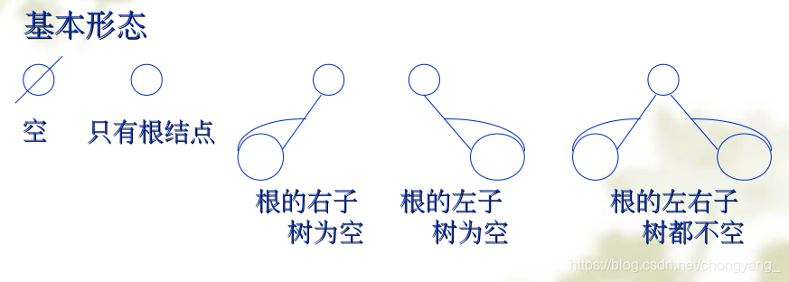
5.2、案例引入
略
5.3、树和二叉树的抽象数据类型定义
常用的遍历方法有：
- void PreOrderTraversal( BinTree BT )：先序----根、左子树、右子树；
- void InOrderTraversal( BinTree BT )： 中序—左子树、根、右子树；
- void PostOrderTraversal( BinTree BT )：后序—左子树、右子树、根
- void LevelOrderTraversal( BinTree BT )：层次遍历，从上到下、从左到右
5.4、二叉树的性质和存储结构
5.4.1、二叉树的性质
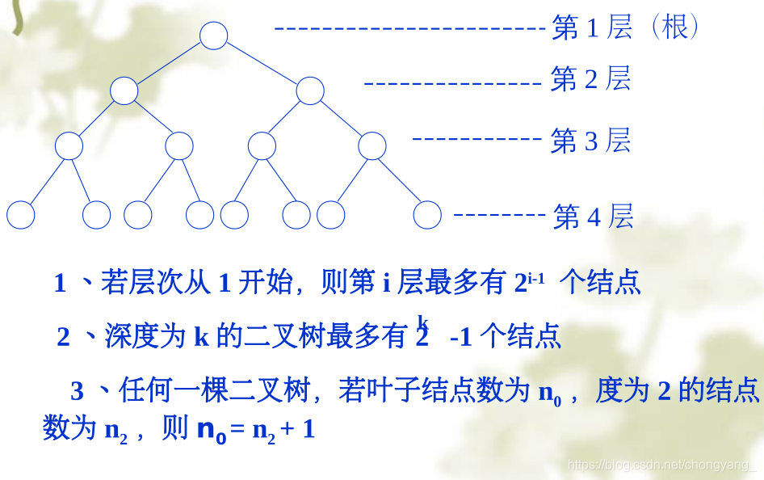
性质1：在二叉树的第i层上至多有2i-1个结点（i>=1）
性质2：深度为k的二叉树至多有2k-1个结点（k>=1）
性质3：对任何一棵二叉树T，如果其终端结点数为n0,度为2的结点数为n2，则n0 = n2+1
一棵二叉树，除了终端结点（叶子结点），就是度为1或2的结点。假设n1表示度为1的结点数，则树 T 的结点总数
n=n0+n1+n2 ,我们再换个角度，看一下树T的连接线数，除了根节点，其他结点都有一根线表示分支进入，所以连接线数为结点总数减去1。按连接线树算的话：n-1=n1+2n2，可推导出n0+n1+n2-1 = n1+2n2，继续推导可得n0 = n2+1
满二叉树：深度为 k 且含有 2k-1个结点
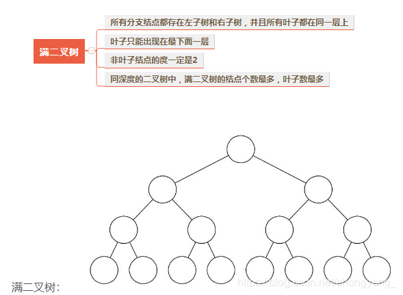
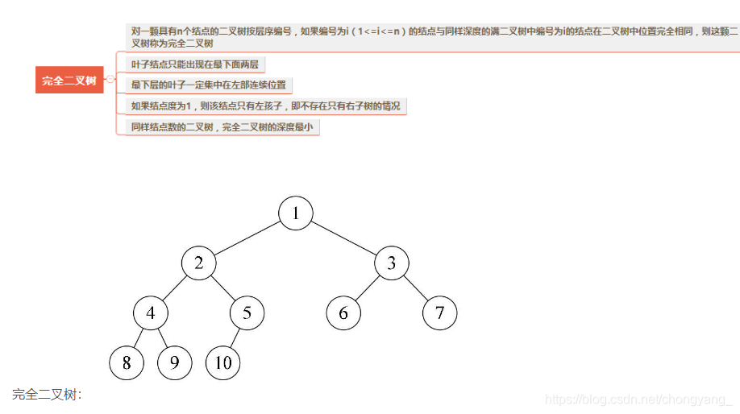
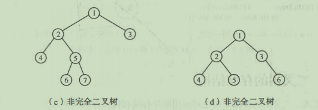
性质4：具有n个结点的完全二叉树的深度为[log2n ] + 1
性质5：如果对一颗有n个结点的完全二叉树（其深度为[log2n ] + 1）的结点按层序编号（从第1层到第[log2n ] + 1层，每层从左到右），对任一结点i(1<=i<=n)有：
-
如果i=1，则结点i是二叉树的根，无双亲；如果i>1，则其双亲是结点 [i/2]
-
如果2i>n,则结点 i 无孩子（结点i为叶子结点）；否则其左孩子是结点 2i
-
如果2i+1>n,则结点 i 无右孩子；否则其右孩子是结点 2i+1
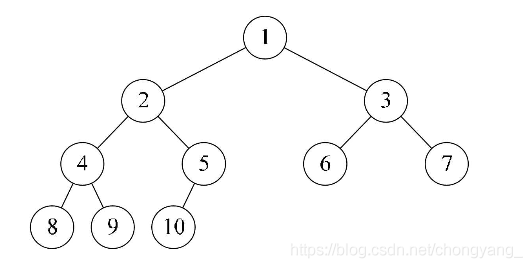
5.4.2、二叉树的存储结构
①、顺序存储结构
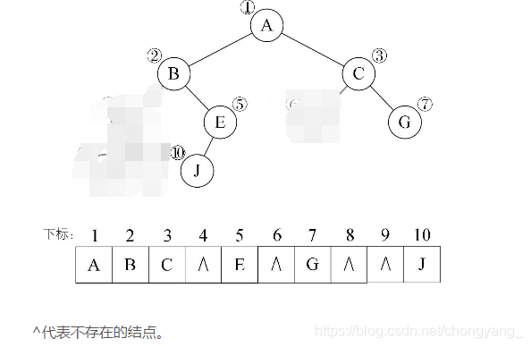
二叉树的顺序存储结构缺点很明显：不能反应逻辑关系；对于特殊的二叉树（左斜树、右斜树），浪费存储空间。所以二叉树顺序存储结构一般只用于完全二叉树(层序排列)。
②、链式存储结构
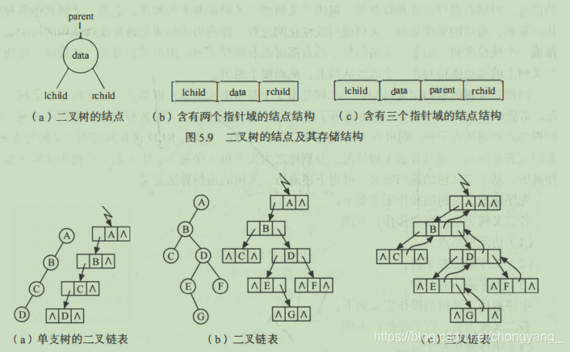
5.5、遍历二叉树和线索二叉树
5.5.1、遍历二叉树
二叉树的遍历是指从根结点出发，按照某种次序访问二叉树中的所有结点，使得每个结点被访问一次且仅被访问一次
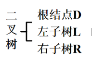
如果限定先左后右，则二叉树遍历方式有三种： 先序（根）：DLR； 中序（根）：LDR ；后序（根）：LRD
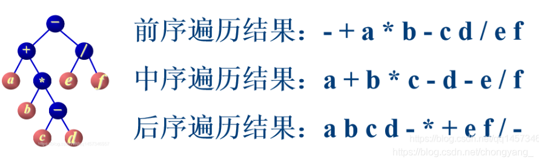
中序遍历的递归算法：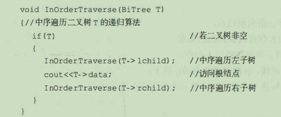
中序遍历的非递归算法：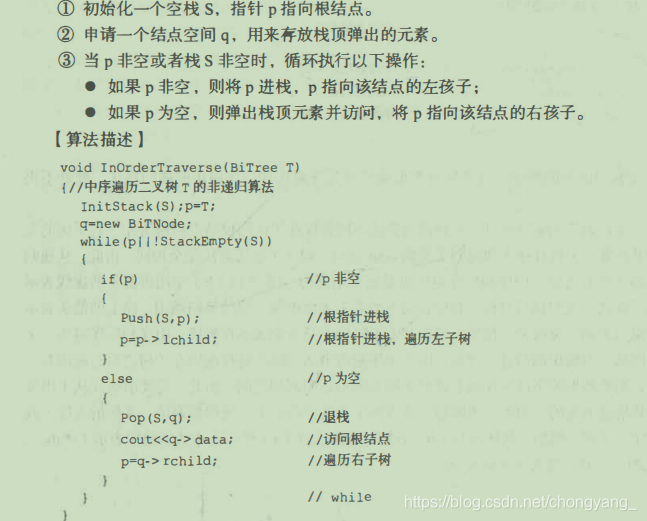
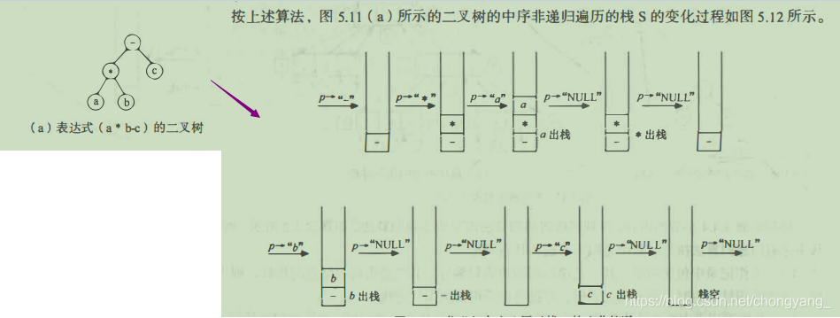
根据遍历序列确定二叉树
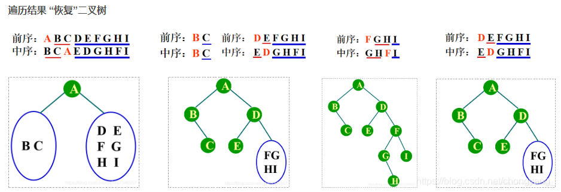
根据前序可知 A 为根节点，再看中序可知 BC 是在根节点 A 左子树，EDGHFI 是在根节点 A 右子树
再看前序和中序可知，B 为 根节点 A 的左孩子，C为B的右孩子，由此类推。
已知一棵二叉树的后序序列和中序序列，分别是DECBHGFA 和BDCEAFHG 是否可以唯一确定这棵树？
①由后序遍历特征，根结点必在后序序列尾部（即A）；
②由中序遍历特征，根结点必在其中间，而且其左部必全部是左子树子孙（即BDCE），其右部必全部是右子树子孙（即FHG）；
③继而，根据后序中的DECB子树可确定B为A的左孩子，根据HGF子串可确定F为A的右孩子；
二叉树遍历算法的应用 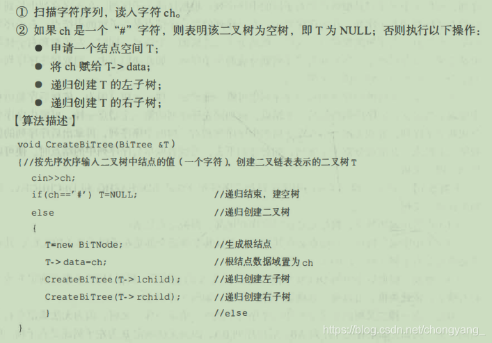
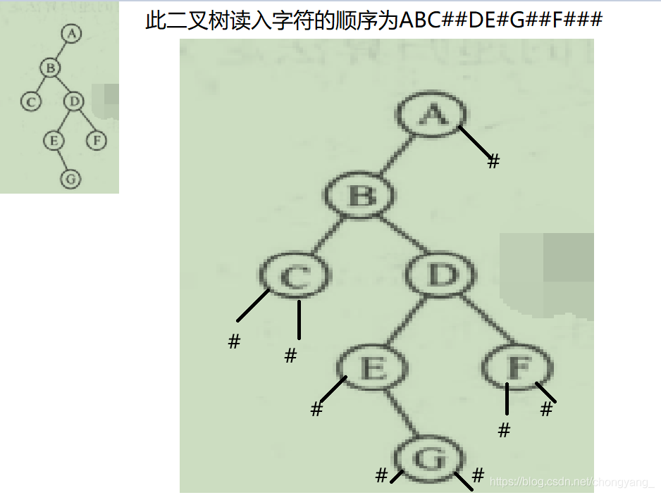
5.5.2、线索二叉树
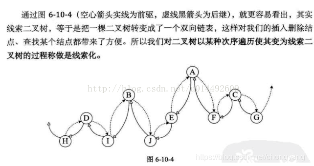
对于n个结点的二叉树，则在二叉链存储结构中就会有n+1个空链域
对于一个有 n 个结点的二叉链表，每个结点指向左右孩子的两个指针域，故共有 2n 个指针域，而 n 个结点的二叉树共有 n-1 条分支，即存在 2n-(n-1) = n+1 个空链域
如果一个结点的左孩子为空，则指向它的前驱结点。
如果一个结点右孩子为空，则指向它的后继。
怎么理解这句话，我们来看一个例子
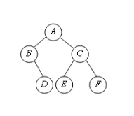
它的后序遍历为: DBEFCA
那么它的后序线索二叉树是怎么画的呢？
我们根据它的后序遍历的结果来画后序线索二叉树
先来看D： D的左孩子为空，则指向它的前驱，它没有前驱。 D的右孩子为空，则指向它的后继，也就是B。
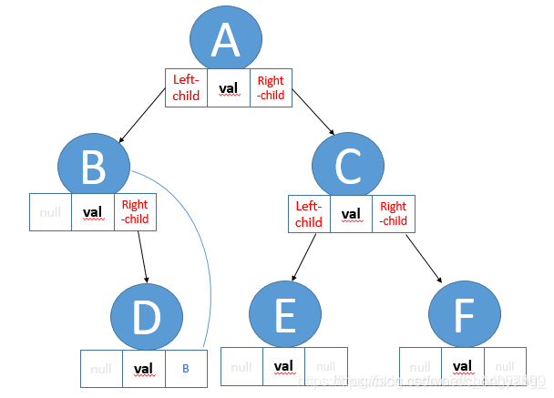
再来看B：B的左孩子为空，则指向它的前驱，它的前驱根据后序遍历的结果是D，所以B的左孩子指向D B的右孩子不为空
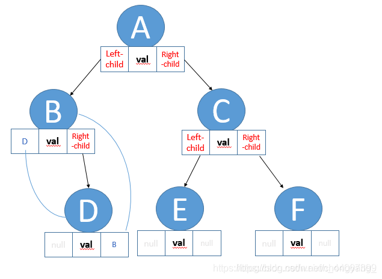
再来看E，E的左孩子为空，则指向它的前驱结点B,E的右孩子为空，则指向它的后继结点F
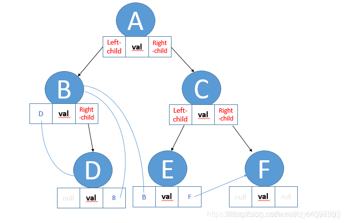
再来看F，它的左孩子为空，则指向它的前驱结点E。它的右孩子为空，则指向它的后继节点C
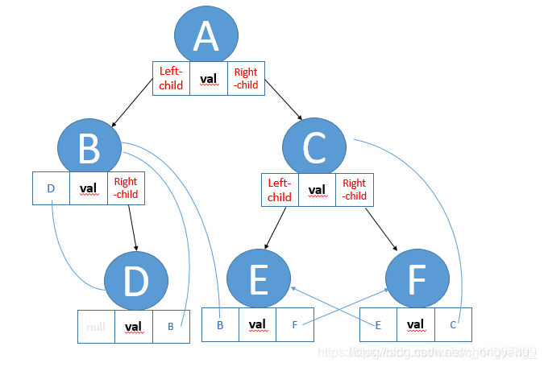
线索二叉树的结点形式：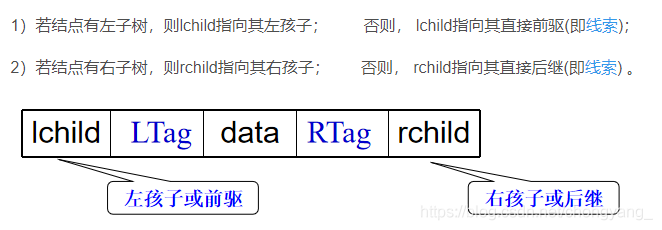
LTag是在 lchild 不存储指针的时候才有其作用，说到底，是利用那 n-1 个空链域存储LTag和RTag，并没有开辟新的内存空间用来存储前驱和后继
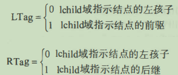
和双向链表结点一样，在二叉树链表上添加一个头结点，如下图所示，并令其lchild域的指针指向二叉树的根结点（图中第一步），其rchild域的指针指向中序遍历访问时的最后一个结点（图中第二步）。反之，令二叉树的中序序列中第一个结点中，lchild域指针和最后一个结点的rchild域指针均指向头结点（图中第三和第四步）。这样的好处是：我们既可以从第一个结点起顺后继进行遍历，也可以从最后一个结点起顺前驱进行遍历。
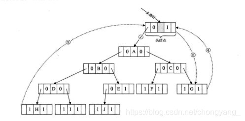
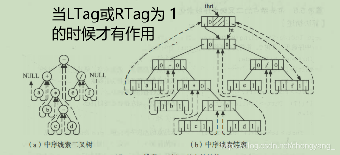
线索二叉树的遍历和构造伪码点超链接
5.6、树和森林
5.6.1、树的存储结构
双亲表示法
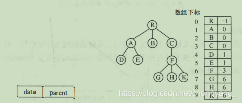 孩子表示法
略
孩子兄弟表示法(常用)
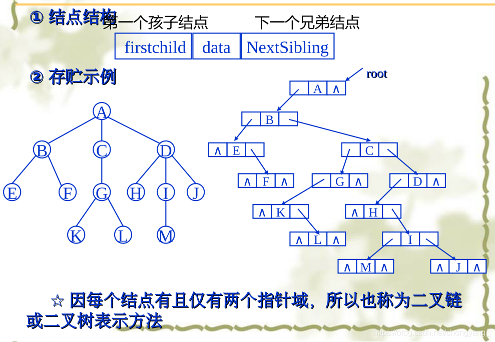
5.6.2、森林与二叉树的转换
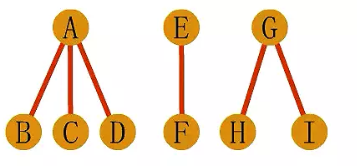
（1）转换：把每棵树转换为二叉树。（即根结点没有右孩子的二叉树）

（2）连接：第一棵二叉树不动，从第二棵二叉树开始，依次把后一棵二叉树的根结点作为前一棵二叉树的根结点的右孩子，用线连接起来。 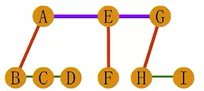
（3）旋转
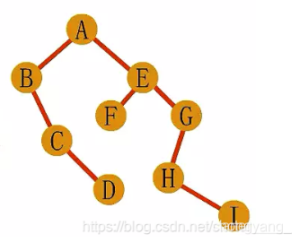
二叉树转换为森林

（1）逆旋转

（2）抹线：从根结点开始，依次抹掉结点与右孩子的连线，直到结点没有右孩子为止
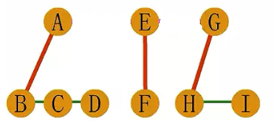
（3）转换：将二叉树转换成树（也可以省略该步骤）

5.6.3、树和森林的遍历
1、树的遍历前面写了
2、森林的遍历
先序遍历森林。
- 若森林非空，访问森林的第一棵树的根结点。
- 先序遍历第一棵树中根结点的子树
- 先序遍历除去掉遍历过的树的森林
中序遍历森林：普通的树构成的森林是不存在中序遍历的，这里的中序遍历必然指代的是化成二叉树的森林。
后序遍历也可以相似定义
5.7、哈弗曼树及其应用
5.7.1、哈弗曼树的基本概念
哈弗曼树又被称为最优树
1 2 3 4 5 6 7 8 9 10 11 | |
哈弗曼树不存在度为 1 的结点。 n个叶子结点的哈弗曼树有 2n-1 个结点
在构造哈弗曼树时，是从叶子结点向根节点的方向进行的，每次都是两个两个成对的结点来形成一个新的分支结点，所以不存在度为1的结点。
其中第三个树的WPL最小，根据验证，其为哈弗曼树。
5.7.2、哈夫曼树的构造算法
- 初始化：根据给定的n个权值 ，构造n棵只有一个根结点的二叉树， 这n棵二叉树构成森林F
- 找最小树：在F中选取两棵根结点树值最小的树作为左、右子树，构造一颗新的二叉树，置新二叉树根的权值为左、右子树根结点权值之和；
- 删除与加入：从F中删除这两颗树，并将新树加入F；
- 判断：重复 2）和 3），直到F中只含一颗树为止，此时得到的这颗二叉树就是哈夫曼树。
示例：w={5,29, 7, 8, 14, 23, 3, 11}
5.7.3、哈夫曼编码
前缀码：如果在一个编码系统中，任一个编码都不是其他任何编码的前缀，则称该编码系统中的编码是前缀码。例如，一组编码01,001,010,100,110就不是前缀码，因为01是010的前缀，若去掉01或010就是前缀码。
哈夫曼编码：对一棵具有n个叶子的哈夫曼树，若对树中的每个左分支赋予0，右分支赋予1，则从根到每个叶子的通路上，各分支的赋值分别构成一个二进制串，该二进制串就称为哈夫曼编码。
哈夫曼编码是最优前缀码
二叉树案例
第五章小结
- 二叉树是一种最常用的树形结构，二叉树具有一些特殊的性质， 而满二叉树和完全二叉树又是两种特殊形态的二叉树。
- 二叉树有两种存储表示：顺序存储和链式存储。顺序存储就是把二叉树的所有结点按照层次
- 顺序存储到连续的存储单元中，这种存储更适用于完全二叉树。链式存储又称二叉链表，每个结点包括两个指针，分别指向其左孩子和右孩子。链式存储是二叉树常用的存储结构。
- 树的存储结构有三种：双亲表示法、孩子表示法和孩子兄弟表示法，孩子兄弟表示法是常用的表示法，任意一棵树都能通过孩子兄弟表示法转换为二叉树进行存储。森林与二叉树之间也存在相应的转换方法，通过这些转换，可以利用二叉树的操作解决一般树的有关问题。
- 在线索二叉树中，利用二叉链表中的 n+1 个空指针域来存放指向某种遍历次序下的前驱结点和后继结点的指针，这些附加的指针就称为 ＂线索＂。引入二叉线索树的目的是加快查找结点前驱或后继的速度。
- 哈夫曼树在通信编码技术上有广泛的应用，只要构造了哈夫曼树，按分支情况在左路径上写代码0, 右路径上写代码1，然后从上到下叶结点相应路径上的代码序列就是该叶结点的最优前缀码， 即哈夫曼编码。
第五章习题
（1）把一棵树转换为二叉树后，这棵二叉树的形态是（ ）。
A．唯一的 Ｂ．有多种
C．有多种，但根结点都没有左孩子 Ｄ．有多种，但根结点都没有右孩子
答案：A
解释：因为二叉树有左孩子、右孩子之分，故一棵树转换为二叉树后，这棵二叉树的形态是唯一的。
（2）由3个结点可以构造出多少种不同的二叉树？（ ）
A．2 B．3 C．4 D．5
答案：D
解释：五种情况如下：
（3）一棵完全二叉树上有1001个结点，其中叶子结点的个数是（ ）。
A．250 B． 500 C．254 D．501
答案：D
解释：设度为0结点（叶子结点）个数为A，度为1的结点个数为B，度为2的结点个数为C，有==A=C+1（二叉树性质），A+B+C=1001，可得2C+B=1000，由==完全二叉树的性质可得B=0或1，又因为C为整数，所以B=0，C=500，A=501，即有501个叶子结点。
（4）一个具有1025个结点的二叉树的高h为（ ）。
A．11 B．10 C．11至1025之间 D．10至1024之间
答案：C
解释：若每层仅有一个结点，则树高h为1025；且其最小树高为[ log21025] + 1=11，即h在11至1025之间。
（5）深度为h的满m叉树的第k层有（ ）个结点。(1=<k=<h)
A．mk-1 B．mk-1 C．mh-1 D．mh-1
答案：A
解释：深度为h的满m叉树共有mh-1个结点，第k层有mk-1个结点。
（6）利用二叉链表存储树，则根结点的右指针是（ ）。
A．指向最左孩子 B．指向最右孩子 C．空 D．非空
答案：C
解释：利用二叉链表存储树时，右指针指向兄弟结点，因为根节点没有兄弟结点，故根节点的右指针指向空。
（7）对二叉树的结点从1开始进行连续编号，要求每个结点的编号大于其左、右孩子的编号，同一结点的左右孩子中，其左孩子的编号小于其右孩子的编号，可采用（ ）遍历实现编号。
A．先序 B. 中序 C. 后序 D. 从根开始按层次遍历
答案：C
解释：根据题意可知按照先左孩子、再右孩子、最后双亲结点的顺序遍历二叉树，即后序遍历二叉树。
（8）若二叉树采用二叉链表存储结构，要交换其所有分支结点左、右子树的位置，利用（ ）遍历方法最合适。
A．前序 B．中序 C．后序 D．按层次
答案：C
解释：后续遍历和层次遍历均可实现左右子树的交换，不过层次遍历的实现消耗比后续大，后序遍历方法最合适。
（9）在下列存储形式中，（ ）不是树的存储形式？
A．双亲表示法 B．孩子表示法 C．孩子兄弟表示法 D．顺序存储表示法
答案：D
解释：树的存储结构有三种：双亲表示法、孩子表示法、孩子兄 弟表示法，其中孩子兄弟表示法是常用的表示法，任意一棵树都能通过孩子兄弟表示法转换为二叉树进行存储。
（10）一棵非空的二叉树的先序遍历序列与后序遍历序列正好相反，则该二叉树一定满足（ ）。
A．所有的结点均无左孩子 B．所有的结点均无右孩子
C．只有一个叶子结点 D．是任意一棵二叉树
答案：C
解释：因为先序遍历结果是“中左右”，后序遍历结果是“左右中”，当没有左子树时，就是“中右”和“右中”；当没有右子树时，就是“中左”和“左中”。则所有的结点均无左孩子或所有的结点均无右孩子均可，所以A、B不能选，又所有的结点均无左孩子与所有的结点均无右孩子时，均只有一个叶子结点，故选C。
（11）设哈夫曼树中有199个结点，则该哈夫曼树中有（ ）个叶子结点。
A．99 B．100
C．101 D．102
答案：B
解释：在哈夫曼树中没有度为1的结点，只有度为0（叶子结点）和度为2的结点。设叶子结点的个数为n0，度为2的结点的个数为n2，由==二叉树的性质n0=n2+1==，则总结点数n= n0+n2=2*n0-1，得到n0=100。
（12）若X是二叉中序线索树中一个有左孩子的结点，且X不为根，则X的前驱为（ ）。
A．X的双亲 B．X的右子树中最左的结点
C．X的左子树中最右结点 D．X的左子树中最右叶结点
答案：C
（13）引入二叉线索树的目的是（ ）。
A．加快查找结点的前驱或后继的速度 B．为了能在二叉树中方便的进行插入与删除
C．为了能方便的找到双亲 D．使二叉树的遍历结果唯一
答案：A
（14）设F是一个森林，B是由F变换得的二叉树。若F中有n个非终端结点，则B中右指针域为空的结点有（ ）个。
A．n−1 B．n C．n + 1 D．n + 2
答案：C
（15）n（n≥2）个权值均不相同的字符构成哈夫曼树，关于该树的叙述中，错误的是（ ）。
A．该树一定是一棵完全二叉树
B．树中一定没有度为1的结点
C．树中两个权值最小的结点一定是兄弟结点
D．树中任一非叶结点的权值一定不小于下一层任一结点的权值
答案：A
解释：哈夫曼树的构造过程是每次都选取权值最小的树作为左右子树构造一棵新的二叉树，所以树中一定没有度为1的结点、两个权值最小的结点一定是兄弟结点、任一非叶结点的权值一定不小于下一层任一结点的权值。
六、图
因为课时原因，笔记中只写一些基本定义概念，遍历和应用等代码我也没学......
6.1、图的定义和基本术语
6.1.1、图的定义
图G由顶点集V和边集E组成，记为G=(V,E)，其中V(G)表示图G中顶点的有限非空集；E(G)表示图G中顶点之间的关系(边)的集合。
注意：线性表可以是空表，树可以是空树，图不可以是空图，图可以没有边，但是至少要有一个顶点。
有向图
若E是有向边（简称弧）的有限集合时，则G为有向图。弧是顶点的有序对，记为
有向图
如上图所示G可表示为：
无向图
若E是无向边（简称边）的有限集合时，则G为无向图。边是顶点的无序对，记为 (v,w) 或(w,v) ，且有 (v,w) =(w,v) 。其中 v，w 是顶点。
无向图
如上图所示，无向图G可表示为：
6.1.2、图的基本术语
①、子图
若有两个图G=(V,E),G1=(V1,E2)，若V1是V的子集且E2是E的子集，称G1是G的子图。
如下面的有向完全图是有向图的一个子图。
②、完全图
1.无向图中任意两点之间都存在边，称为无向完全图；如无向图中的示例就是完全图。无向完全图具有 n(n-1)/2 条边
2.有向图中任意两点之间都存在方向向反的两条弧，称为有向完全图；有向完全图具有 n(n-1)条弧
如示例中的有向图就不是完全图，但如果没有顶点3和指向顶点3 的边，就是一个完全图。即下图是一个完全图。
有向完全图
③、稀疏图和稠密图
边树小于 nlogn 的图称为稀疏图，反之称为稠密图
④、权和网
- 在实际应用中，每条边可以标上具有某种含义的数值，该数值称为该边上的权，这些权可以表示从一个顶点到另一个顶点的距离或耗费
- 带权的图称为网
⑤、邻接点
E是边的有限集合
对于下面的无向图G，边 (1,2) ∈ E ,则称顶点 1 和 2 互为邻接点，即 1 和 2 相邻接
边 (1,2) 依附于顶点 1 和 2，或者说边 (1,2) 与顶点 1 和 2 相关联

⑥、顶点的度、入度和出度
顶点的度为以该顶点为一个端点的边的数目
对于无向图，顶点的边数为度，度数之和是顶点边数的两倍
对于有向图，入度是以顶点为终点（即箭头所指方向），出度是以顶点为起点 （即箭尾巴所指方向） 。
有向图的全部顶点入度之和等于出度之和且等于边数。顶点的度等于入度与出度之和
注意：入度与出度是针对有向图来说的
⑦、路径和路径长度
路径：在图中，两点间边构成的序列
在无向图中，比如图中0到6中一条路径0 -> 1 -> 3 -> 2 -> 6。一般图中两点之间的路径不止一条。这里的路径只要找到一条就返回。
对于有向图,则路径也是有向的
⑧、回路或环
第一个顶点和最后一个顶点相同的路径称为回路或环
⑨、简单路径、简单回路或简单环
顶点不重复出现的路径称为简单路径。
除第一个顶点和最后一个顶点外，其余顶点不重复出现的回路称为简单回路或简单环
⑩、连通、连通图、连通分量
在无向图中，两顶点有路径存在，就称为连通的。
若图中==任意==两顶点都连通，同此图为==连通图==。无==向图中的==极大连通子图==称为==连通分量。
以下面两个图为例，下面的图是上面的图的连通分量，并且下面的图是连通图。上面图中 I与J 也是连通的。
上图的两个连通分量
⑪、强连通图、强连通分量
在有向图中，两顶点两个方向都有路径，两顶点称为强连通。若任一顶点都是强连通的，称为强连通图
有==向图中==极大强连通子图==为有向图的==强连通分量
⑫、连通图的生成树(无向树)
连通图的生成树==是包含图中全部顶点的一个==极小连通子图，若图中有n个顶点，则生成树有n-1条边，仅有足以构成一颗树的 n-1 条边
所以对于生成树而言，若砍去一条边，就会变成非连通图，若加上一条边，则构成一个环，因为这条边使得他依附的那两个顶点之间有了第二条路径
⑬、有向树和生成森林
有一个顶点的入度为0，其余顶点的入度均为1的有向图称作有向树。如下图：
有向树
一个有向图的生成森林是由若干棵有向树组成，含有图中全部顶点，但只有足以构成若干棵不相交的有向树的弧
6.2、案例引入
略
6.3、图的类型定义
略
6.4、图的存储结构
6.4.1、邻接矩阵法(数组表示法)
图的邻接矩阵的存储方式是用两个数组来表示图。一个一维数组存储图中顶点信息，一个二维数组（称为邻接矩阵）存储图中的边或弧的信息（可分别称他们为顶点数组和边数组）。
在无向图中，求某个顶点的度，即计算此顶点vi在邻接矩阵中第i行（或第i列）的元素之和。若vi到vj之间有通路，则记为1，反之为0。在有向图中，求某个顶点vi的出度，即求此顶点所在行的元素之和，若求某个顶点的度，即求顶点所在列的元素之和。
设图G有n个顶点，则邻接矩阵是一个n×n的方阵

邻接矩阵表示法的优缺点：
- 优点：
- 便于判断两个顶点之间是否有边， 即根据A[i] [j] = 0或1来判断
- 便于计算各个顶点的度。对于无向图，邻接矩阵第 i 行元素之和就是顶点 i 的度；对于有向图，第 i 行元素之和就是顶点 i 的出度，第 i 列元素之和就是顶点 i 的入度
- 缺点：
- 不便于增加和删除顶点
- 不便于统计边的数目，需要扫描邻接矩阵所有元素才能统计完毕，时间复杂度为 O(n2)
- 空间复杂度高
伪码等因为课时缩短不学，可以看下方超链接
6.4.2、邻接表
对图中的每个顶点建立一个单链表，存储该顶点所有邻接顶点及其相关信息。每一个单链表设有一个表头结点
把从一个顶点出发的所有边链接在一个单链表（又名边链表）中
把所有边链表的表头结点放在一个顺序表（又名顶点表）中
对于有向图，邻接表又称正邻接表或出度表
有向图的逆邻接表又称入度表
- 经常使用==头插法==
- 表中的data域是在链表中的存储下标指的是它们在节点表中的索引位置（在表的最左边给出）
邻接表表示法的优缺点：
-
优点
-
便于增加和删除结点
- 便于统计边的数目
-
空间效率高
-
缺点
-
不便于判断顶点之间是否有边
- 不便于计算有向图各个顶点的度
6.4.3、十字链表
6.4.3、邻接多重表
十字链表和邻接多重表跳转链接
6.5、图的遍历
6.5.1、深度优先搜索
算法思想
深度优先搜索思想： 假设初始状态是图中所有顶点均未被访问，则从某个顶点v出发，首先访问该顶点，然后依次从它的各个未被访问的邻接点出发深度优先搜索遍历图，直至图中所有和v有路径相通的顶点都被访问到。若此时尚有其他顶点未被访问到，则另选一个未被访问的顶点作起始点，重复上述过程，直至图中所有顶点都被访问到为止。
算法特点
深度优先搜索是一个递归的过程。首先，选定一个出发点后进行遍历，如果有邻接的未被访问过的节点则继续前进。若不能继续前进，则回退一步再前进，若回退一步仍然不能前进，则连续回退至可以前进的位置为止。重复此过程，直到所有与选定点相通的所有顶点都被遍历。
深度优先遍历类似于二叉树的先序遍历
深度优先遍历通常借助栈来实现算法
图解过程
无向图深度优先搜索
以下图中所示无向图说明深度优先搜索遍历过程。
- 首先选取顶点A为起始点，输出A顶点信息，并标记A为已访问顶点
- A的邻接顶点有C、D、F，从中任意选取一个顶点前进。这里我们选取C顶点为前进位置顶点。输出C顶点信息，并标记C为已访问顶点。当前位置指向顶点C
- 顶点C的邻接顶点有A、D和B，此时A已经标记为已访问顶点，因此不能继续访问。从B或者D中选取一个顶点前进，这里我们选取B顶点为前进位置顶点。输出B顶点信息，标记B顶点为已访问顶点。当前位置指向顶点B
- 顶点B的邻接顶点只有C、E，C已被标记，不能继续访问，因此选取E为前进位置顶点，输出E顶点信息，标记E顶点，当前位置指向E
- 顶点E的邻接顶点均已被标记，此时无法继续前进，则需要进行回退。将当前位置回退至顶点B
- 顶点B的邻接顶点也均被标记，需要继续回退，当前位置回退至C
- 顶点C可以前进的顶点位置为D，则输出D顶点信息，并标记D顶点。当前位置指向顶点D
- 顶点D没有前进的顶点位置，因此需要回退操作。将当前位置回退至顶点C
- 顶点C没有前进的顶点位置，继续回退，将当前位置回退至顶点A
- 顶点A前进的顶点位置为F，输出F顶点信息，并标记F。将当前位置指向顶点F
- 顶点F的前进顶点位置为G，输出G顶点信息，并标记G。将当前位置指向顶点G
- 顶点G没有前进顶点位置，回退至F。当前位置指向F
- 顶点F没有前进顶点位置，回退至A，当前位置指向A
- 顶点A没有前进顶点位置，继续回退，发现没有可用回退的顶点，则以A为起始的遍历结束。若图中仍有未被访问的顶点，则选取未访问的顶点为起始点，继续执行此过程。直至所有顶点均被访问
- 采用深度优先搜索遍历顺序为A->C->B->E->D->F->G
有向图深度优先搜索
以图中所示有向图说明深度优先搜索遍历过程
- 以顶点A为起始点，输出A，并标记A。当前位置指向A
- 以A为尾的边只有1条，且边的头为顶点B，则前进位置为顶点B，输出B，标记B。当前位置指向B
- 顶点B可以前进的位置有C与F，选取F为前进位置，将F入栈，并标记F。当前位置指向F
- 顶点F的前进位置为G，输出G，并标记G。当前位置指向G
- 顶点G没有可以前进的位置，则回退至F，当前位置指向F
- 顶点F没有可以前进的位置，继续回退至B，当前位置指向B
- 顶点B可以前进位置为C和E，选取E，输出E，并标记E。当前位置指向E
- 顶点E的前进位置为D和B，而B已经被标记为输出过，则输出D，并标记D。当前位置指向D
- 顶点D的前进位置为C，输出C，并标记C。当前位置指向C
- 顶点C没有前进位置，进行回退至D
- 继续执行此过程，发现没有可以回退的顶点，以A为起始点的遍历过程结束。若图中仍有未被访问的顶点，则选取未访问的顶点为起始点，继续执行此过程。直至所有顶点均被访问。
- 输出次序：A、B、F、G、E、D、C
6.5.2、广度优先搜索
算法思想
广度优先搜索思想：从图中某顶点v出发，在访问了v之后依次访问v的各个未曾访问过的邻接点，然后分别从这些邻接点出发依次访问它们的邻接点，并使得“先被访问的顶点的邻接点先于后被访问的顶点的邻接点被访问，直至图中所有已被访问的顶点的邻接点都被访问到。如果此时图中尚有顶点未被访问，则需要另选一个未曾被访问过的顶点作为新的起始点，重复上述过程，直至图中所有顶点都被访问到为止。
算法特点
广度优先搜索类似于树的层次遍历，是按照一种由近及远的方式访问图的顶点。在进行广度优先搜索时需要使用队列存储顶点信息。
广度优先遍历通常借助队列来实现算法
图解过程
无向图的广度优先搜索
图所示的无向图，采用广度优先搜索过程。
（1）选取A为起始点，输出A，A入队列，标记A，当前位置指向A。
（2）队列头为A，A出队列。A的邻接顶点有B、E，输出B和E，将B和E入队，并标记B、E。当前位置指向A。
（3）队列头为B，B出队列。B的邻接顶点有C、D，输出C、D，将C、D入队列，并标记C、D。当前位置指向B。
（4）队列头为E，E出队列。E的邻接顶点有D、F，但是D已经被标记，因此输出F，将F入队列，并标记F。当前位置指向E。
（5）队列头为C，C出队列。C的邻接顶点有B、D，但B、D均被标记。无元素入队列。当前位置指向C。
（6）队列头为D，D出队列。D的邻接顶点有B、C、E，但是B、C、E均被标记，无元素入队列。当前位置指向D。
（7）队列头为F，F出队列。F的邻接顶点有G、H，输出G、H，将G、H入队列，并标记G、H。当前位置指向F。
（8）队列头为G，G出队列。G的邻接顶点有F，但F已被标记，无元素入队列。当前位置指向G。
（9）队列头为H，H出队列。H的邻接顶点有F，但F已被标记，无元素入队列。当前位置指向H。
（10）队列空，则以A为起始点的遍历结束。若图中仍有未被访问的顶点，则选取未访问的顶点为起始点，继续执行此过程。直至所有顶点均被访问。
则访问次序为：A、B、E、C、D、F、G、H
有向图的广度优先搜索
以图所示的有向图为例进行广度优先搜索。
（1）选取A为起始点，输出A，将A入队列，标记A。
（2）队列头为A，A出队列。以A为尾的边有两条，对应的头分别为B、C，则A的邻接顶点有B、C。输出B、C，将B、C入队列，并标记B、C。
（3）队列头为B，B出队列。B的邻接顶点为C，C已经被标记，因此无新元素入队列。
（4）队列头为C，C出队列。C的邻接顶点有E、F。输出E、F，将E、F入队列，并标记E、F。
（5）队列头为E，E出队列。E的邻接顶点有G、H。输出G、H，将G、H入队列，并标记G、H。
（6）队列头为F，F出队列。F无邻接顶点。
（7）队列头为G，G出队列。G无邻接顶点。
（8）队列头为H，H出队列。H邻接顶点为E，但是E已被标记，无新元素入队列。
（9）队列为空，以A为起始点的遍历过程结束，此时图中仍有D未被访问，则以D为起始点继续遍历。选取D为起始点，输出D，将D入队列，标记D。
（10）队列头为D，D出队列，D的邻接顶点为B，B已被标记，无新元素入队列。
（11）队列为空，且所有元素均被访问，广度优先搜索遍历过程结束。广度优先搜索的输出序列为：A->B->E->C->D->F->G->H。
转载于：图的两种遍历方式
案例：
DFS：首先从 1 链表开始找，找到 2 ，再根据链表2 找到 4（1已经被找到，所以跳过），然后根据链表4 找到 3，再根据链表3 找到 5 ，然后根据链表5找到6。 即：1,2,4,3,5,6
BFS：1为起始点，输出1，1入队列
队列头为1，1出队列，与1的邻接顶点为2,3.输出2,3。将2,3入队
队列头为2,2出队列，与2的邻接顶点为1,4，但是1已经输出，输出4，将4入队
队列头为3,3出队列，与3的邻接顶点为 1,4,5，但是1，4已经输出，输出5，将5入队
队列头为4,4出队列，与4的邻接顶点为2,3,6，但是2,3已经输出，输出6，将6入队
队列头为5,5出队列，与5的邻接顶点都已经输出
队列头为6,6出队列，与6的邻接顶点都已经输出
队列为空，BFS遍历结束
6.6、图的应用
6.6.1、最小生成树
首先关于树的生成树：
广度：1邻接2，3，然后2邻接4,5，然后3邻接6,7，最后4邻接8
深度：1后2, 2后4, 4后8, 8后5, 5后面没有，然后返回8, 8后6， 6后3, 3后7
一、普里姆算法（Prim）
普利姆算法从始至终始终是一整棵树
算法的时间复杂度为O(n2)，与图中边数无关，该算法适合于稠密图
首先随意找一个顶点，一般都是v1，然后找到与v1相连的权值最小的边（若有多条，则随机选取一条），然后找与这两个点相连的有最小权值的边，然后与找这三个点相连权值最小的边，一直重复，直到有n-1条边，并且连接完所有的顶点，注意，不能形成环。
二、克鲁斯卡尔算法(Kruskal)
基本思想：按照权值从小到大的顺序选择n-1条边，并保证这n-1条边不构成回路。 具体做法：首先构造一个只含n个顶点的森林，然后依权值从小到大从连通网中选择边加入到森林中，并使森林中不产生回路，直至森林变成一棵树为止。
时间复杂度为：O（eloge） 边数e越大，所耗费时间越长，则适合稀疏图
因为课时原因，伪码略，具体可以看超链接
6.6.2、最短路径
最短路径问题：如果从有向图中某一顶点(称为源点)到达另一顶点(称为终点)的路径可能不止一条，如何找到一条路径使得沿此路径上各边上的权值总和达到最小
一、迪杰斯拉(Dijkstra)算法
以D为开头，求D到各个点的最短距离。
第1步：初始化距离，其实指与D直接连接的点的距离。dis[c]代表D到C点的最短距离，因而初始dis[C]=3，dis[E]=4，dis[D]=0，其余为无穷大。设置集合S用来表示已经找到的最短路径。此时，S={D}。现在得到D到各点距离 {D(0)，C(3)，E（4），F（*），G（*），B（*），A(*)}，其中*代表未知数也可以说是无穷大，括号里面的数值代表D点到该点的最短距离。
第2步：不考虑集合S中的值，因为dis[C]=3，是当中距离最短的，所以此时更新S，S={D,C}。接着我们看与C连接的点，分别有B，E，F，已经在集合S中的不看，dis[C-B]=10，因而dis[B]=dis[C]+10=13，dis[F]=dis[C]+dis[C-F]=9，dis[E]=dis[C]+dis[C-E]=3+5=8>4 (初始化时的dis[E]=4)不更新。此时{D(0)，C(3)，E（4），F（9），G（*），B（13），A(*)}。
第3步：在第2步中，E点的值4最小，更新S={D，C，E}，此时看与E点直接连接的点，分别有F，G。dis[F]=dis[E]+dis[E-F]=4+2=6（比原来的值小，得到更新），dis[G]=dis[E]+dis[E-G]=4+8=12（更新）。此时{D(0)，C(3)，E（4），F（6），G（12），B（13），A(*)}。
第4步：在第3步中，F点的值6最小，更新S={D，C，E，F}，此时看与F点直接连接的点，分别有B，A，G。dis[B]=dis[F]+dis[F-B]=6+7=13，dis[A]=dis[F]+dis[F-A]=6+16=22，dis[G]=dis[F]+dis[F-G]=6+9=15>12（不更新）。此时{D(0)，C(3)，E（4），F（6），G（12），B（13），A(22)}.
第5步：在第4步中，G点的值12最小，更新S={D，C，E，F，G}，此时看与G点直接连接的点，只有A。dis[A]=dis[G]+dis[G-A]=12+14=26>22(不更新)。{D(0)，C(3)，E（4），F（6），G（12），B（13），A(22)}.
第6步：在第5步中，B点的值13最小，更新S={D，C，E，F，G，B}，此时看与B点直接连接的点，只有A。dis[A]=dis[B]+dis[B-A]=13+12=25>22(不更新)。{D(0)，C(3)，E（4），F（6），G（12），B（13），A(22)}.
第6步：最后只剩下A值，直接进入集合S={D，C，E，F，G，B，A}，此时所有的点都已经遍历结束，得到最终结果{D(0)，C(3)，E（4），F（6），G（12），B（13），A(22)}.
文字转载于：https://zhuanlan.zhihu.com/p/40338107
图转载于：https://blog.csdn.net/heroacool/article/details/51014824
伪码等也在其中
二、弗洛伊德算法
因为课时原因：跳转链接自学
6.6.3、拓扑排序
一个无环的有向图称作为有向无环图，简称DAG图。
AOV网：用顶点表示活动，用弧表示活动间的优先关系的有向图称为顶点表示活动的网，简称AOV网
在AOV网中，不应该出现有向环，因为存在环意味着某项活动应以自己为先决条件
所谓拓扑排序就是将AOV网中所有顶点排成一个线性序列
举个例子，学习java系列的教程
就比如学习java系类(部分)从java基础，到jsp/servlet，到ssm，到springboot，springcloud等是个循序渐进且有依赖的过程。在jsp学习要首先掌握java基础和html基础。学习框架要掌握jsp/servlet和jdbc之类才行。那么，这个学习过程即构成一个拓扑序列。当然这个序列也不唯一，你可以对不关联的学科随意选择顺序(比如html和java可以随便先开始哪一个。)
那上述序列可以简单表示为：
其中五种均为可以选择的学习方案，对课程安排可以有参考作用，当然，五个都是拓扑序列。只是选择的策略不同！
规则：
图中每个顶点只出现一次。 A在B前面，则不存在B在A前面的路径。(不能成环！！！！) 顶点的顺序是保证所有指向它的下个节点在被指节点前面！(例如A—>B—>C那么A一定在B前面，B一定在C前面)。所以，这个核心规则下只要满足即可，所以拓扑排序序列不一定唯一！
拓扑排序算法分析
正常步骤为(方法不一定唯一)：
从DGA图中找到一个没有前驱的顶点输出。(可以遍历，也可以用优先队列维护) 删除以这个点为起点的边。(它的指向的边删除，为了找到下个没有前驱的顶点) 重复上述，直到最后一个顶点被输出。如果还有顶点未被输出，则说明有环！ 对于上图的简单序列，可以简单描述步骤为：
1：删除1或2，并输出
2：删除2或3以及对应边
3：删除3或者4以及对应边
4：重复以上规则步骤
这样就完成一次拓扑排序，得到一个拓扑序列，但是这个序列并不唯一！从过程中也看到有很多选择方案，具体得到结果看你算法的设计了。但只要满足即是拓扑排序序列。
另外观察 1 2 4 3 6 5 7 9这个序列满足我们所说的有关系的节点指向的在前面，被指向的在后面。如果完全没关系那不一定前后(例如1,2)
转载于：拓扑排序
6.6.4、关键路径
AOE网：在一个表示工程的带权有向图中，用顶点表示事件（如V0），用有向边表示活动（如
AOE网是一个带权的有向无环图
源点：
在AOE网中，没有入边的顶点称为源点；如顶点V0
终点：
在AOE网中，没有出边的顶点称为终点；如顶点V3
AOE网的性质：
【1】只有在进入某顶点的活动都已经结束，该顶点所代表的事件才发生；
1 | |
【2】只有在某顶点所代表的事件发生后，从该顶点出发的各活动才开始；
1 | |
在AOE网中，所有活动都完成才能到达终点，因此完成整个工程所必须花费的时间（即最短工期）应该为源点到终点的最大路径长度。具有最大路径长度的路径称为关键路径。关键路径上的活动称为关键活动
事件的最早发生时间：ve[k]
从源点向终点方向计算 ve[0] = 0 ve[1] = ve[0] + a0 = 0 + 4 = 4 ve[2] = max( ve[0] + a1, ve[1] + a2 ) = max(0 + 3, 4 + 2 )= 6 ve[3] = max(ve[1] + a4, ve[2] + a3) = max(4 + 6, 6+4) = 10
事件的最迟发生时间：vl[k]
从终点向源点方向计算 vl[3] = ve[3] = 10 vl[2] = vl[3] - a3 = 10 - 4 = 6 vl[1] = min(vl[3] - a4, vl[2] - a2) = min(10-6, 6-2) = 4
vl[0] = min(vl[2] - a1, vl[1] - a0) = min(4-4, 4-2) = 0
活动的最早发生时间：e[i]
共有五个活动： e[0] = ve[0] = 0 e[1] = ve[0] = 0 e[2] = ve[1] = 4 e[3] = ve[2] = 6 e[4] = ve[1] = 4
活动的最迟发生时间：el[i]
l[0] = v[1] - a0 = 4 - 4 = 0 l[1] = vl[2] - a1 = 6 - 3 = 3 l[2] = vl[2] - a2 = 6 - 2 = 4 l[3] = vl[3] - a3 = 10 - 4 = 6 l[4] = vl[3] - a4 = 10 - 6 = 4
活动的最早开始时间和最晚开始时间相等，则说明该活动时属于关键路径上的活动，即关键活动。
在AOE网中，所有活动都完成才能到达终点，因此完成整个工程所必须花费的时间（即最短工期）应该为源点到终点的最大路径长度。具有最大路径长度的路径称为==关键路径==。关键路径上的活动称为==关键活动==：
经过比较，得出关键活动有：a0, a2, a3, a4，因为不能有环，画出示意图如下：
该AOE网有两条关键路径。
所以，通过此案例也可以发现，一个AOE网的关键路径可能有多条。
转载于：关键路径
原博客有一点点错误，这里更改了一点：ve[3] = max(ve[1] + a4, ve[2] + a3) = max(4 + 6, 3 + 4) = 10 应改为：ve[3] = max(ve[1] + a4, ve[2] + a3) = max(4 + 6, 6 + 4) = 10
案例：
第六章小结
第六章习题
（1）在一个图中，所有顶点的度数之和等于图的边数的（ ）倍。
A．½ B．1 C．2 D．4
答案：C
（2）在一个有向图中，所有顶点的入度之和等于所有顶点的出度之和的（ ）倍。
A．½ B．1 C．2 D．4
答案：B
解释：有向图所有顶点入度之和等于所有顶点出度之和。
（3）具有n个顶点的有向图最多有（ ）条边。
A．n B．n(n-1) C．n(n+1) D．n2
答案：B
解释：有向图的边有方向之分，即为从n个顶点中重复选取2个顶点有序排列，结果为n(n-1)。
（4）n个顶点的连通图用邻接距阵表示时，该距阵至少有（ ）个非零元素。
A．n B．2(n-1) C．n/2 D．n2
答案：B
所谓连通图一定是无向图，有向图叫强连通图
连通n个顶点,至少只需要n-1条边就可以了，由于无向图的每条边同时关联两个顶点,因此邻接矩阵中每条边被存储了两次（也就是说是对称矩阵）,因此至少有2(n-1)个非零元素
（5）G是一个非连通无向图，共有28条边，则该图至少有（ ）个顶点。
A．7 B．8 C．9 D．10
答案：C
解释：8个顶点的无向图最多有==8*7/2=28==条边，再添加一个点即构成非连通无向图，故至少有9个顶点。
（6）若从无向图的任意一个顶点出发进行一次深度优先搜索可以访问图中所有的顶点，则该图一定是（ ）图。
A．非连通 B．连通 C．强连通 D．有向
答案：B
解释：即从该无向图任意一个顶点出发有到各个顶点的路径，所以该无向图是连通图。
（7）下面（ ）算法适合构造一个稠密图G的最小生成树。
A． Prim算法 B．Kruskal算法 C．Floyd算法 D．Dijkstra算法
答案：A
解释：==Prim算法==适合构造一个==稠密图G==的最小生成树，==Kruskal算法==适合构造一个==稀疏图G==的最小生成树。
（8）用邻接表表示图进行广度优先遍历时，通常借助（ ）来实现算法。
A．栈 B. 队列 C. 树 D．图
答案：B
解释：广度优先遍历通常借助队列来实现算法，深度优先遍历通常借助栈来实现算法。
（9）用邻接表表示图进行深度优先遍历时，通常借助（ ）来实现算法。
A．栈 B. 队列 C. 树 D．图
答案：A
解释：广度优先遍历通常借助队列来实现算法，深度优先遍历通常借助栈来实现算法。
（10）深度优先遍历类似于二叉树的（ ）。
A．先序遍历 B．中序遍历 C．后序遍历 D．层次遍历
答案：A
（11）广度优先遍历类似于二叉树的（ ）。
A．先序遍历 B．中序遍历 C．后序遍历 D．层次遍历
答案：D
（12）图的BFS生成树的树高比DFS生成树的树高（ ）。
A．小 B．相等 C．小或相等 D．大或相等
答案：C
解释：对于一些特殊的图，比如只有一个顶点的图，其BFS生成树的树高和DFS生成树的树高相等。一般的图，根据图的BFS生成树和DFS树的算法思想，BFS生成树的树高比DFS生成树的树高小。
（13）已知图的邻接矩阵如图6.30所示，则从顶点v0出发按深度优先遍历的结果是（ ）。
1 | |
答案：C
因为是深度优先,找到与顶点0直接相连的结点,由邻接矩阵知道是顶点1（多个相邻节点取第一个找到的未遍历到的结点）,然后再在邻接矩阵中找与顶点1直接相连的结点,得到顶点3.相同方法找到后续结点为：顶点4,顶点2.因为顶点2的相连结点都已被遍历,所以退回到顶点4继续遍历,遍历到顶点5,然后是顶点6
（14）已知图的邻接表如图6.31所示，则从顶点v0出发按广度优先遍历的结果是（ ），按深度优先遍历的结果是（ ）。
图6.31 邻接表
A．0 1 3 2 B．0 2 3 1 C．0 3 2 1 D．0 1 2 3
答案：D、D
广度：访问V0，依次访问其未访问的邻接顶点（顺着链表）
深度：首先邻的结点 1，然后找到 2，然后找到 3
（15）下面（ ）方法可以判断出一个有向图是否有环
A．深度优先遍历 B．拓扑排序 C．求最短路径 D．求关键路径
答案：B
七、查找
7.1、查找的基本概念
-
查找表：用于查找的数据元素集合。查找表由同一类型的数据元素（或记录）构成
对查找表经常进行的操作
查找表是否存在某元素
从查找表中检索某特定元素的属性
在查找表中插入一个元素
在查找表中删除一个元素
- 静态查找表：只做查找表是否存在某元素，从查找表中检索某特定元素的属性操作的称为静态查找表
在查找过程中只是对数据元素进行查找
- 动态查找表：在查找表中插入一个元素，在查找表中删除一个元素操作的称为动态查找表
在实施查找的同时，插入找不到的元素，或从查找表中删除已查到的某个元素，即允许表中元素变化
-
关键字： 是数据元素中的某个数据项。唯一能标识数据元素（或记录）的关键字，即每个元素的关键字值互不相同，这种关键字称为主关键字；若查找表中某些元素的关键字值相同，称这种关键字为次关键字
-
查找：在查找表搜索关键字等于给定值的数据元素（或记录）。若表中存在这样的记录，则称查找成功；若表中不存在关键字等于给定值的记录，则称查找不成功。若按主关键字查找，查找结果是唯一的；若按次关键字查找，结果可能是多个记录，即结果可能不唯一
7.2、线性表的查找
7.2.1、顺序查找
顺序查找的查找过程为：从表的一端开始，依次将记录的关键字和给定值进行比较，若某个记录的关键字和给定值相等，则查找成功；反之，若扫描整个表后，仍未找到关键字和给定值相等的记录，则查找失败 储结构（线性表），又适用于线性表的链式存储结构（线性链表）
顺序查找方法既适用于线性表的顺序存 下面只介绍以顺序表作为存储结构时实现的顺序查找算法
在此定义下，顺序查找算法便与第2章的算法2.2 一样。在此假设元素从 ST.R[1] 开始顺序向后存放，ST.R[0]设置为哨兵，查找时从表的最后开始比较，如下面算法所示
ST.R[0] 称为 “哨兵”。引入它的目的是使循环不用判断数组是否会越界，从而提高程序的效率
平均查找长度为： $$ ASL=\frac{n+1}{2} $$
时间复杂度为：O(n)
- 优点：对数据元素的存储没有要求，顺序存储或链式存储皆可，数据元素也不一定必须有序
- 缺点：当n较大时，平均查找长度较大，效率低
7.2.2、折半查找
当==静态查找表==的关键字==有序==时，可以用折半查找来实现
折半查找也称二分查找，它是一种效率较高的查找方法。但是，折半查找要求线性表必须采用顺序存储结构， 而且表中元素按关键字有序排列
基本思想：key 值与中间元素比较，相等则成功；key 大则比较右半边；key 小则比较左半边
分别用low和high来表示当前查找区间的下界和 上界，mid为区间的中间位置
折半查找的判定树：
折半查找判定树过程：
折半查找在查找不成功和给定值进行比较的关键字的比较次数==最多为[log2n]+1== 次，即==判定树的最大层次数==
还可以按照值来做出折半查找的判定树：
折半查找的存取结构必须具有随机存取的特性。仅适合于线性表的顺序存储结构，不适合链式存储结构，且要求元素有序
平均查找长度： $$ ASL=\frac{n+1}{n}log_2(n+1)-1 $$ 当n较大时，可有以下近似结果
时间复杂度为：O(log2n) $$ ASL=log_2(n+1)-1 $$
折半查找在查找不成功和给定值进行比较的关键字个数最多为 [log2n]+1，即判定树的最大层次数
则下题比较次数最多的是 5
7.2.3、分块查找
分块查找又称为索引顺序查找，这是一种性能介于顺序查找和折半查找之间的一种查找方法
-
分块查找，又称为索引顺序查找，吸取了顺序查找和折半查找各自的优点，既有动态结构，又适于快速查找
-
基本思想：将查找表分为若干个子块，块内元素可以无序，块间元素有序
块间有序含义： 若a<b，则第 b 块中所有记录的关键字均大于第 a 块中的最大关键字
建立“索引表”，每个结点含有最大关键字域和指向本块第一个结点的指针，且按关键字有序
分块查找的过程分为两步： （1）索引查找：在索引表中确定待查记录所在的块；（可顺序、可折半） （2）块内查找：在块内顺序查找
分块查找的平均查找长度为索引查找（Ll）和块内查找（Ls）的平均长度之和
优缺点：
- 优点：插入和删除比较容易，无需进行大量的移动。
- 缺点：要增加一个索引表的存储空间并对初始索引表进行排序运算。
- 适用情况：如果线性表既要快速查找又经常动态变化，则可采用分块查找
三种查找方法的比较
| 顺序查找 | 折半查找 | 分块查找 | 分块查找 |
|---|---|---|---|
| ASL | 最大 | 最小 | 中间 |
| 表结构 | 有序表、无序表 | 有序表 | 分块有序 |
| 存储结构 | 顺序表、线性链表 | 顺序表 | 顺序表、线性链表 |
7.3、树表的查找
==顺序查找、二分(折半)查找和索引查找==都是==静态==查找表，其中==二分查找==的效率最高。
静态查找表的缺点是当表的插入或删除操作频繁时,为维护表的有序性，需要移动表中很多记录。
这种由移动记录引起的额外时间开销，就会抵消二分查找的优点（二分查找和分块查找只适用于静态查找表）。
若要对动态查找表进行高效率的查找，可以使用==树表==。
以二叉树或树作为表的组织形式，称为树表。
7.3.1、二叉排序树
1、二叉排序树的定义
二叉排序树又称二叉查找树，它是一种排序和查找都很有用的特殊二叉树。
二叉排序树右称二叉查找树。或者为空树，或者是具有以下性质：
（1）若它的左子树不为空，则左子树所有节点的值小于根结点，
（2）若它的右子树不为空，则根结点的值小于所有右子树结点的值
（3）它的左右子树叶分别为二叉排序树
总结起来就是根据结点的值有：左子树<根结点<右子树
==中序遍历==一颗二叉排序树可以得到一个结点值==递增==的有序序列
2、二叉排序树的查找
二叉排序树有一些基本的应用，可以用于查找，查找的长度与树的深度有关。其平均查找长度的数量级与==log2N==相同（N为结点个数）
注意：二叉排序树中没有值相同的节点
查询过程比较简单，首先将关键字和根节点的关键字比较，如果相等则返回节点的位置(指针)；否则，如果小于根节点的关键字，则去左子树中继续查找；如果大于根节点的关键字，则去右子树中查找；如果找到叶子节点也没找到，则返回NULL。
一个序列的排序二叉树有多种构造情况。下面考虑两种极端情况：深度最小和深度最大的二叉排序树。
关键字序列（45,24,53,12,37,93），假设6个记录的查找概率相等都为⅙
容易看出这是一棵完全二叉树，该数的深度（最大层次）为3，它的平均查找长度为：
ASL = ⅙（1+2+2+3+3+3）= 14/6
再来看该关键字序列构成深度最大的二叉排序树
这是一棵单支树，其深度为6，它的平均查找长度为：
ASL = ⅙（1+2+3+4+5+6）= 21/6
在随机情况下,该数的平均查找长度总是介于这两种情况之间，即14/6 < log26 < 21/6。二叉排序树的平均查找长度和log2N是等数量级的。
3、二叉排序树的插入
二叉排序数插入过程的基本过程是查找，所以时间复杂度同查找一样，是O(log2n)
1 2 3 | |
4、二叉排序树的创建
二叉树创建就是从根节点按关键字序列插入的过程
5、二叉排序树的删除
删除二叉排序树中任意一个结点，需要分成以下三种情况讨论：
（1）删除的是叶子结点
这种情况最简单，由于删除叶子结点不会破坏整棵树的结构，只需要修改其双亲结点的指针即可。
（2）删除的结点只有左子树或只有右子树。
这种情况只需要将其左子树或右子树往上推，替代要删除结点的位置，显然，作此修改也不会破坏二叉排序树的结构。
（3）删除的结点左右子树都不为空
这种情况稍微复杂一点，为了不保持二叉排序树的结构，有两种思路，一种就是从要删除结点的左子树中选取最大的结点进行替代之（前驱），另一种就是从要删除的结点的右子树中选取最小的结点替代之(后继)
7.3.2、平衡二叉树（AVL树）
它或者是颗空树，或者是具有下列性质的二叉树：
- 它的左子树和右子树都是平衡二叉树，且左子树和右子树的深度之差的绝对值不超过1。
- 若将二叉树节点的平衡因子BF定义为该节点的左子树的深度减去它的右子树的深度，则平衡二叉树上所有节点的平衡因子只可能为-1,0,1.
- 只要二叉树上有一个节点的平衡因子的绝对值大于1，那么这颗平衡二叉树就失去了平衡。
因为AVL树上任何结点的左右孩子子树的深度之差都不超过1，则可以证明它的深度和 log2n是同数量级的(其中n为结点个数)。
由此，其查找的时间复杂度为O(log2n)
最小不平衡树： 是指离插入结点最近且以平衡因子的绝对值大于1的结点作为根的子树。
书上的LL，RR什么的挺麻烦的，看这个两分钟的视频应该就很清楚。 小姐姐声音太甜啦啊哈哈哈哈哈哈哈哈哈
视频中讲解的那三个点就是最小不平衡树，即是指离插入结点最近且以平衡因子的绝对值大于1的结点作为根的子树。
7.3.3、B-树
对于一棵m阶B-tree，每个结点至多可以拥有m个子结点。
即遍观整棵树，子节点最多的个数是m，那么这棵树就是m阶树。
具体描述可以看超链接视频：
7.3.4、B+树
7.4、散列表的查找
7.4.1、散列表的基本概念
散列表也叫==哈希表==
在元素的存储位置和其关键字之间建立某种直接关系，那么在进行查找时，就无需做比较或做很少次的比较，按照这种关系直接由关键字找到相应的记录。这就是散列查找法的思想，它通过对元素的关键字值进行某种运算，直接求出元素的地址，即使用关键字到地址的直接转换方法，而不需要反复比较。因此，散列查找法又叫杂凑法或散列法。
- 散列函数和散列地址:在记录的存储位置p和其关键字key之间建立一个确定的对应关系H,使 p= H(key) ,称这个对应关系H为散列函数，p为散列地址。
- 散列表：采用散列技术将记录存放在一块连续有限的存储空间中，这块连续存储空间称为散列表或哈希表。通常散列表的存储空间是一个一维数组，散列地址是数组的下标。
- 冲突和同义词:对不同的关键字可能得到同一散列地址，即 key1≠key2, 而H(key1) =H( key2)，这种现象称为冲突。具有相同函数值的关键字对该散列函数来说称作同义词，key1 与 key2 互称为同义词。
7.4.2、散列函数的构造方法
构造散列函数的方法很多，通常要考虑以下因素：
- 散列表的长度
- 关键字的长度
- 关键字的分布情况
- 计算散列函数所需的时间
- 记录的查找频率
构造一个好的散列函数需要遵循以下两条原则：
- 函数计算要简单，每一关键字只能有一个散列地址与之对应。
- 函数的值域需在表长的范围内，计算出的散列地址的分布应均匀，尽可能减少冲突。
1、数字分析法
如果关键字时位数较多的数字，比如11位的手机号”130**1234”，其中前三位是接入号；中间四位是HLR识别号，表示用户号的归属地；后四为才是真正的用户号。如下图所示。
如果现在要存储某家公司的登记表，若用手机号作为关键字，极有可能前7位都是相同的，选择后四位成为散列地址就是不错的选择。若容易出现冲突，对抽取出来的数字再进行反转、右环位移等。总的目的就是为了提供一个散列函数，能够合理地将关键字分配到散列表的各个位置。
数字分析法通过适合处理关键字位数比较大的情况，如果事先知道关键字的分布且关键字的若干位分布比较均匀，就可以考虑用这个方法。
2、平方取中法
这个方法计算很简单，假设关键字是1234，那么它的平方就是1522756，再抽取中间的3位就是227，用做散列地址。 平方取中法比较适合不知道关键字的分布，而位数又不是很大的情况。
3、折叠法
折叠法是将关键字从左到右分割成位数相等的几部分（注意最后一部分位数不够时可以短些），然后将这几部分叠加求和，并按散列表表长，取后几位（舍去进位）作为散列地址。 比如关键字是9876543210，散列表表长为三位，将它分为四组，987|654|321|0，然后将它们叠加求和987 + 654 + 321 + 0 = 1962，去掉进位得到散列地址962。 折叠法事先不需要知道关键字的分布，适合关键字位数较多的情况。
4、除留余数法
此方法为最常用的构造散列函数方法。对于散列表长为m的散列函数公式为： H(key) = key%p
%是取模（求余数）的意思。事实上，这方法不仅可以对关键字直接取模 ，也可以再折叠、平方取中后再取模。 很显然，本方法的关键在于选择合适的p，p如果选不好，就可能会容易产生冲突。 根据前辈们的经验，若散列表的表长为m，通常p为小于表长的最大质数或不包含小于20质因子的合数。
质数：又称素数。一个大于1的自然数，除了1和它自身外，不能被其他自然数整除的数叫做质数；
质因子（或质因数）在数论里是指能整除给定正整数的质数。
7.4.3、处理冲突的方法
处理冲突的实际含义是：为产生冲突的地址寻找下一个哈希地址（散列地址）
1、开放地址法
所谓的开放地址法就是一旦发生了冲突，就去寻找下一个空的散列地址，只要散列表足够大，空的散列地址总能找到，并将记录存入。
通常把寻找下一个空位的过程称为探测
它的公示为：Hi = (H(key)+di)%m i =1,2,3...,k(k≤m-1)
其中di 为增量序列，根据 di 取值的不同，可以分为以下3中探测方法
①、线性探测法
di = 1,2,3,...,m-1
②、二次探测法
di = 12 ,-12 ,22 ,-22 ,32 ,……，+k2 ,-k2 （k≤m/2）
最后一个key = 34，H(key) = 10，与22所在的位置冲突，可是22后面没有空位置了，反而它的前面有一个空位置，尽管可以不断地求余后得到结果，但效率很差。因此可以改进di = 12 ,-12 ,22 ,-22 ,32 ,……，+k2 ,-k2 （k≤m/2），这样就等于是可以双向寻找到可能的空位置。对于34来说，取di = -1即可找到空位置了。另外，增加平方运算的目的是为了不让关键字都聚集在某一块区域。称这种方法为二次探测法。
③、伪随机探测法
在冲突时，对于位移量di采用随机函数计算得到，称之为随机探测法。 既然是随机，那么查找的时候不也随机生成di 吗？如何取得相同的地址呢？这里的随机其实是伪随机数。伪随机数就是说，如果设置随机种子相同，则不断调用随机函数可以生成不会重复的数列，在查找时，用同样的随机种子，它每次得到的数列是想通的，相同的di 当然可以得到相同的散列地址。
可以看出，上述三种处理方法各有优缺点。线性探测法的优点是:只要散列表未填满，总能找到一个不发生冲突的地址。缺点是:会产生“二次聚集”现象。而二次探测法和伪随机探测法的优点是:可以避免“二次聚集”现象。缺点也很显然:不能保证一定找到不发生冲突的地址。
2、链地址法
此时，已经不存在什么冲突换地址的问题，无论有多少个冲突，都只是在当前位置给单链表增加结点的问题。 链地址法对于可能会造成很多冲突的散列函数来说，提供了绝不会出现找不到地址的保证。当然，这也就带来了查找时需要遍历单链表的性能损耗
7.4.4、散列表的查找
查找过程中需和给定值进行比较的关键字的个数取决于三个因素：散列函数、处理冲突的方法和散列表的装填因子
散列表的装填因子α定义为： $$ α = \dfrac{表中填入的记录数}{散列表的长度} $$ α标志散列表的装满程度。直观地看，α越小，发生冲突的可能性就越小；反之，α越大，表中已填入的记录越多，再填记录时，发生冲突的可能性就越大，则查找时，给定值需与之进行比较的关键字的个数也就越多。
第七章小结
线性表的查找：主要包括顺序查找、折半查找和分块查找，三者比较：
二叉排序树和折半查找的比较
散列查找法主要研究两方面的问题：如何构造散列函数，以及如何处理冲突
- 构造散列函数的方法很多，除留余数法是最常用的构造散列函数的方法。它不仅可以对关键字直接取模，也可在折叠、平方取中等运算之后取模。
- 处理冲突的方法通常分为两大类：开放地址法和链地址法，二者的差别类似于顺序表和单链表的差别
第七章习题
（1）对n个元素的表做顺序查找时，若查找每个元素的概率相同，则平均查找长度为（ ）。
A．(n-1)/2 B． n/2 C．(n+1)/2 D．n
答案：C
解释：总查找次数N=1+2+3+…+n=n(n+1)/2，则平均查找长度为N/n=(n+1)/2
（2）适用于折半查找的表的存储方式及元素排列要求为（ ）。
A．链接方式存储，元素无序 B．链接方式存储，元素有序
C．顺序方式存储，元素无序 D．顺序方式存储，元素有序
答案：D
解释：折半查找要求线性表必须采用顺序存储结构，而且表中元素按关键字有序排列。
（3）如果要求一个线性表既能较快的查找，又能适应动态变化的要求，最好采用( )查找法。
A．顺序查找 B．折半查找
C．分块查找 D．哈希查找
答案：C
解释：分块查找的优点是：在表中插入和删除数据元素时，只要找到该元素对应的块，就可以在该块内进行插入和删除运算。由于块内是无序的，故插入和删除比较容易，无需进行大量移动。如果线性表既要快速查找又经常动态变化，则可采用分块查找。
（4）折半查找有序表（4，6，10，12，20，30，50，70，88，100）。若查找表中元素58，则它将依次与表中（ ）比较大小，查找结果是失败。
A．20，70，30，50 B．30，88，70，50
C．20，50 D．30，88，50
答案：A
解释：表中共10个元素，第一次取(1+10)/2=5，与第五个元素20比较，58大于20，再取(6+10)/2=8，与第八个元素70比较，依次类推再与30、50比较，最终查找失败。
（5）对22个记录的有序表作折半查找，当查找失败时，至少需要比较（ ）次关键字。
A．3 B．4 C．5 D．6
答案：B
解释：22个记录的有序表，其折半查找的判定树深度为 \(\log_2 n\)，其中 \(n\) 是记录的个数。对于 \(n = 22\)，我们可以计算出 \(\log_2 22 \approx 4.5\)，向上取整为 5 次比较，且该判定树不是满二叉树，即查找失败时至多比较5次，至少比较4次。
（6）折半搜索与二叉排序树的时间性能（ ）。
A．相同 B．完全不同
C．有时不相同 D．数量级都是O(log2n)
答案：C
（7）分别以下列序列构造二叉排序树，与用其它三个序列所构造的结果不同的是（ ）。
A．（100，80， 90， 60， 120，110，130）
B．（100，120，110，130，80， 60， 90）
C．（100，60， 80， 90， 120，110，130）
D．(100，80， 60， 90， 120，130，110)
答案：C
解释：A、B、C、D四个选项构造二叉排序树都以100为根，易知A、B、D三个序列中第一个比100小的关键字为80，即100的左孩子为80，而C选项中100的左孩子为60，故选C。
（8）在平衡二叉树中插入一个结点后造成了不平衡，设最低的不平衡结点为A，并已知A的左孩子的平衡因子为0右孩子的平衡因子为1，则应作（ ）型调整以使其平衡。
A．LL B．LR C．RL D．RR
答案：C
（9）下列关于m阶B-树的说法错误的是（ ）。
A．根结点至多有m棵子树
B．所有叶子都在同一层次上
C．非叶结点至少有m/2 (m为偶数)或m/2+1（m为奇数）棵子树
D．根结点中的数据是有序的
答案：D
（10）下面关于B-和B+树的叙述中，不正确的是（ ）。
A．B-树和B+树都是平衡的多叉树 B．B-树和B+树都可用于文件的索引结构
C．B-树和B+树都能有效地支持顺序检索 D．B-树和B+树都能有效地支持随机检索
答案：C
（11）m阶B-树是一棵（ ）。
A．m叉排序树 B．m叉平衡排序树
C．m-1叉平衡排序树 D．m+1叉平衡排序树
答案：B
（12）下面关于哈希查找的说法，正确的是（ ）。
A．哈希函数构造的越复杂越好，因为这样随机性好，冲突小
B．除留余数法是所有哈希函数中最好的
C．不存在特别好与坏的哈希函数，要视情况而定
D．哈希表的平均查找长度有时也和记录总数有关
答案：C
（13）下面关于哈希查找的说法，不正确的是（ ）。
A．采用链地址法处理冲突时，查找一个元素的时间是相同的
B．采用链地址法处理冲突时，若插入规定总是在链首，则插入任一个元素的时间是相同的
C．用链地址法处理冲突，不会引起二次聚集现象
D．用链地址法处理冲突，适合表长不确定的情况
答案：A
解释：在同义词构成的单链表中，查找该单链表表中不同元素，所消耗的时间不同。
（14）设哈希表长为14，哈希函数是H(key)=key%11，表中已有数据的关键字为15，38，61，84共四个，现要将关键字为49的元素加到表中，用二次探测法解决冲突，则放入的位置是（ ）。
A．8 B．3 C．5 D．9
答案：D
解释：关键字15放入位置4，关键字38放入位置5，关键字61放入位置6，关键字84放入位置7，再添加关键字49，计算得到地址为5，冲突，用二次探测法解决冲突得到新地址为6，仍冲突，再用用二次探测法解决冲突，得到新地址为4，仍冲突，再用用二次探测法解决冲突，得到新地址为9，不冲突，即将关键字49放入位置9。
二次探测法：
（15）采用线性探测法处理冲突，可能要探测多个位置，在查找成功的情况下，所探测的这些位置上的关键字 ( )。
A．不一定都是同义词 B．一定都是同义词
C．一定都不是同义词 D．都相同
答案：A
解释：所探测的这些关键字可能是在处理其它关键字冲突过程中放入该位置的。
八、排序
8.1、基本概念和排序方法概述
8.1.1、排序的基本概念
- 排序 ：就是一系列数据，按照某个关键字（例如：销量，价格），进行递增或者递减的顺序排列起来
-
排序的稳定性 ：能保证两个关键字相等的数，经过排序之后，其在序列的前后位置顺序不变。（A1=A2，排序前A1在A2前面，排序后A1还在A2前面），则称这种排序是稳定的。反之，若排序后前后位置顺序变化，则称这种排序是不稳定的
-
内部排序和外部排序 ：待排序记录全部存放在计算机内存中进行排序的过程称为内部排序；在排序过程中需对外存进行访问的排序过程
- 内部排序的过程是一个逐步扩大记录的有序序列长度的过程
8.1.2、内部排序方法的分类
内部排序的方法很多，每一种方法都有各自的优点，适合在不同环境下使用
将排序记录分为：有序序列区和无序序列区
8.1.3、待排序记录的存储方式
- 顺序表：实现排序需要移动记录
- 链表：实现排序不需要移动记录，仅需修改指针即可。这种排序方式称为链表排序
- 地址排序：在排序过程中不移动记录本身，而移动地址向量这些记录的“地址”，在排序结束之后再按照地址向量中的值调整记录的存储位置
8.2、插入排序
8.2.1、直接插入排序

把待排序的数据插入到已经排好序的数据中，直到所有的数据插入完成，即就是直接插入排序。
为了避免数组下标出界，在 r[0] 处设置监视哨
时间复杂度：平均O(n^2)，最好O(n)， 最坏O(n^2) 空间复杂度：O(1)，因为只需要一个记录的辅助空间 r[0]
特点：
- 稳定性：稳定
- 也适用于链式存储结构，只是在单链表上无需移动记录，只需修改相应的指针
- 更适用与初始化基本有序的情况
8.8.2、折半插入排序
原理：折半插入算法是对直接插入排序算法的改进，排序原理同直接插入算法
区别：以从小到大排序为例，首先用key存储需要排序的数据 第一步：折半查找——用low、mid、high划分两个区域【low，mid-1】和【mid+1，high】 第二步：判断——如果key值小于序列的中间值【mid】，则代表key值应该插入左边的区域【low，mid-1】，然后对【low，mid-1】再重复划分区域，直到low>high为止 第三步：插入——最后的插入位置应该是high+1，我们只需要先将high之后位置的数据整体后移，然后将key赋值给【mid+1】，即完成插入。
转载于：折半插入排序 时间复杂度：O(n2)
空间复杂度：仍是只需要一个记录的辅助空间r[0]，所以时间复杂度为O(1)
特点：
- 稳定性：稳定
- 因为要进行折半查找，所以只能用于顺序结构，不能用于链式结构
- 适合初始记录无序、n较大的时候
8.2.3、希尔排序

希尔排序又称为“缩小增量排序”。
看了很多笔记，总觉得文字讲解冗杂难懂。不如这个视频
最后的增量一定为1，同一组中使用直接插入排序。
时间复杂度：n(log2n)2
空间复杂度：也是只需要一个辅助空间 r[0] ，所以时间复杂度为O(1)
特点：
- 稳定性：因为记录跳跃式地移动，所以不稳定
- 只适用于顺序结构，不能用于链式结构
- 适用于初始记录无序、n较大的情况
8.3、交换排序
8.3.1、冒泡排序

1 | |
(2)比较第2和第3个数，将小数放在前面，大数放在后面。
......
(3)如此继续，直到比较到最后的两个数，将小数放在前面，大数放在后面，重复步骤，直至全部排序完成
(4)在上面一趟比较完成后，最后一个数一定是数组中最大的一个数，所以在比较第二趟的时候，最后一个数是不参加比较的。
(5)在第二趟比较完成后，倒数第二个数也一定是数组中倒数第二大数，所以在第三趟的比较中，最后两个数是不参与比较的。
(6)依次类推，每一趟比较次数减少
时间复杂度为O(n2)，但若是一开始就是有序的，则==时间复杂度为O(n)==
特点：
- 稳定性：稳定
- 可以用于链式存储结构
- 当初始记录无序，n较大时，此算法不宜采用
8.3.2、快速排序
严奶奶中的快速排序算法过程和《算法导论》中的过程不太一样，虽然最后结果一样。找了好多笔记，迷茫了好大一会。这里按照严奶奶的方法写过程了。
当选择枢轴关键字的记录是第一个关键字时，则从最右边开始先向左寻找；当选择枢轴关键字是最后一个关键字时，则从最左边开始向右寻找。

然后小于46的那一半再按照此方法排序，右边那一半也按照此方法排序，直到划分完所有关键字
做图太累啦哈哈哈哈哈哈哈，我自己手写了剩余过程，我以后一定练字！！！！
看了很多笔记，看起来很难理解，看这个八分钟视频很容易理解快速排序的概念
时间复杂度：O(nlog2n)
空间复杂度：最好情况下的空间复杂度为：O(log2n)，最坏情况下为O(n)
特点：
- 记录非顺次的移动导致排序方法是不稳定的
- 排序过程中需要定位表的下界和上界，所以适合用于顺序结构，很难用于链式结构
- 当n较大时，在平均情况下快速排序是所有内部排序方法中速度最快的一种，所以其适合初始记录无序、n较大时的情况
8.4、选择排序
8.4.1、简单选择排序
gif讲解，最小值与前面第一个未排序状态交换
简单选择排序又称为直接选择排序
在要排序的一组数中，选出最小（或者最大）的一个数与第1个位置的数交换；然后在剩下的数中再找最小（或者最大）的与第2个位置的数交换，以此类推，直到 第n-1个元素（倒数第二个数）和第n个元素（最后一个数）比较为止。 简单选择排序的实例：
时间复杂度：O(n2)
空间复杂度：同冒泡排序一样，只有在两个记录交换时需要一个辅助空间，所以空间复杂度为O(1)
特点：
- 稳定性：就选择排序方法来讲是稳定的，但教程中实现的方法是不稳定的
- 可用于链式存储结构
- 移动记录次数较少，当每一记录占用的空间较多时，此方法比直接插入排序快
8.4.2、树形选择排序
树形选择排序，又称锦标赛排序(理解即可)
转载于，又做了些更改树形选择排序
从两个节点中选出最小值作为他们的父节点
缺点： 1、与“∞”的比较多余； 2、辅助空间使用多。于是产生了堆排序
8.4.3、堆排序

以下图转载于：堆排序
堆是具有以下性质的完全二叉树：每个结点的值都大于或等于其左右孩子结点的值，称为大顶堆；或者每个结点的值都小于或等于其左右孩子结点的值，称为小顶堆。如下图：
同时，我们对堆中的结点按层进行编号，将这种逻辑结构映射到数组中就是下面这个样子
该数组从逻辑上讲就是一个堆结构，我们用简单的公式来描述一下堆的定义就是：
大顶堆：arr[i] >= arr[2i+1] && arr[i] >= arr[2i+2]
小顶堆：arr[i] <= arr[2i+1] && arr[i] <= arr[2i+2]
ok，了解了这些定义。接下来，我们来看看堆排序的基本思想及基本步骤：
堆排序基本思想及步骤
堆排序的基本思想是：将待排序序列构造成一个大顶堆，此时，整个序列的最大值就是堆顶的根节点。将其与末尾元素进行交换，此时末尾就为最大值。然后将剩余n-1个元素重新构造成一个堆，这样会得到n个元素的次小值。如此反复执行，便能得到一个有序序列了
步骤一 构造初始堆。将给定无序序列构造成一个大顶堆（一般升序采用大顶堆，降序采用小顶堆)。
a.假设给定无序序列结构如下
b.此时我们从下至上，从右到左找非叶子结点，转换为父节点大于子节点的状态
c.找到第二个非叶节点4，由于[4,9,8]中9元素最大，4和9交换。
这时，交换导致了子根[4,5,6]结构混乱，继续调整，[4,5,6]中6最大，交换4和6。
此时，我们就将一个无需序列构造成了一个大顶堆。
步骤二 将堆顶元素与末尾元素进行交换，使末尾元素最大。然后继续调整堆，再将堆顶元素与末尾元素交换，得到第二大元素。如此反复进行交换、重建、交换。
a.将堆顶元素9和末尾元素4进行交换，并且将9标记为已排序状态
b.重新调整结构，使其继续满足堆定义
c.再将堆顶元素8与末尾元素5进行交换，得到第二大元素8，并将8也标记为已标记状态
后续过程，继续进行调整，交换，如此反复进行，最终使得整个序列有序
再简单总结下堆排序的基本思路：
a.将无需序列构建成一个堆，根据升序降序需求选择大顶堆或小顶堆;
b.将堆顶元素与末尾元素交换，将最大元素"沉"到数组末端;
c.重新调整结构，使其满足堆定义，然后继续交换堆顶元素与当前末尾元素，反复执行调整+交换步骤，直到整个序列有序。
我觉得笔记讲的太冗杂，找到了个视频感觉不错，时长在十分钟，讲的很慢，二倍速听也能跟上
时间复杂度：O(nlog2n)
空间复杂度：O(1)
特点：
- 稳定性：不稳定排序
- 只能用于顺序结构，不能用于链式结构
- 记录较少时不宜采用
8.5、归并排序

七分钟讲解归并排序 归并排序是用分治思想，分治模式在每一层递归上有三个步骤：
- 分解（Divide）：将n个元素分成个含n/2个元素的子序列
- 解决（Conquer）：用合并排序法对两个子序列递归的排序
- 合并（Combine）：合并两个已排序的子序列已得到排序结果
转载于归并排序
再来看看治阶段，我们需要将两个已经有序的子序列合并成一个有序序列，比如上图中的最后一次合并，要将[4,5,7,8]和[1,2,3,6]两个已经有序的子序列，合并为最终序列[1,2,3,4,5,6,7,8]，来看下实现步骤。
比较 i 和 j （即两组中各自的第一个元素），将小的元素放入到temp中
8.6、基数排序
从最低位（个位）开始进行，按关键字的不同收集，然后按第二低位（十位）开始进行，按关键字的不同收集，若有些数没有更低位，则按0收集
特点：
- 稳定性：稳定排序
- 可用于链式结构，也可用于顺序结构
- 基数排序需要知道各级关键字的取值范围
8.7、外部排序
8.7.1、外部排序的基本方法
当我们要排序的文件太大以至于内存无法一次性装下的时候，这时候我们可以使用外部排序，将数据在外部存储器和内存之间来回交换，以达到排序的目的
一天晚上，徒弟正在呆呆地看着星星，师傅突然坐在了他的旁边。
师傅：徒弟啊，天上的星星那么多，不妨你给他们按大小排个序吧。
徒弟：哦，这个怎么排？
师傅：具体到我们的编程，就是给你2G的数据在硬盘上，但是你只有256M的内存可以使用，怎么排这2G的数据呢？
徒弟：这么小的内存，装不下数据啊，怎么排呢？
师傅：还记得分而治之的思想吗？我们可以采用这种思想把它排好序。
徒弟：具体怎么做呢？
首先我们可以将2G的数据分成8份，分别加载到内存中进行排序，在内存中的排序方法可以用内部排序如快排、希尔等，如下图：
这些已经排好序的数据块我们称之为顺串或者归并段
然后我们可以将两个顺串通过内存合并成一个顺串（长度为原来的两倍），经过四次合并就完成了。
注意：合并操作几乎不需要内存，只需要读入两个元素，选择一个最大的（或最小的）输出，然后再读入，再选择
按照这个方法一直来回合并，一直合并到最终的一个顺串（有序），此时排序完成。
举个实际的例子吧：
为了简化，设待排数据为：80,92,12,97,13,34,18,98,27,57,40,74，内存一次可以装三个数据。
将数据分为四段：
然后将每段读入内存，排序后写入硬盘
然后两两合并
输出哪个元素，就在那个元素所在的顺串（或者叫组）再次读入元素
就这样，一直合并到两个顺串完，如果一个顺串先完，剩下另一个顺串，那么就将剩下的顺串直接拷贝到硬盘上。
按照这个方法，把合并后的顺串继续合并，直到最终合并成一个总的顺串，排序结束。
徒弟：我听说硬盘的读写速度比内存要慢的多，按照这种排序那岂不是很慢。
师傅：好问题，一般我们会从两方面去优化。
对同一个文件而言，采取这种排序方法所需读写外存（磁盘）的次数与归并趟数有关，很容易理解，归并趟数越多，内存和外存的交互次数就越多。
假设初始时有 m 个顺串，每次对 k 个顺串进行归并，归并趟数就为：
比如我们的例子，刚开始的时候顺串（初始顺串）有 4 个（m=4）,每次对 2 个顺串进行归并（k=2）,那么归并趟数就为:
到此，我们优化的目标就很明确了：
① 增加归并的顺串数量 k
② 减少初始顺串的个数 m
8.7.2、多路平衡归并
【归并排序】归并排序不需要将全部记录都读入内存即可完成排序，是外部排序中最常用的方法
| 内部排序的归并算法 | 外部排序的归并算法 | 相同点 |
|---|---|---|
| 子序列存在内存中 | 子序列在外存中（文件中） | 思想一样，都是从小单元归并到单元 |
之前是两两一合并，使得归并顺串的数量为 2（这叫2-路平衡归并）, 我们可以多归并几个，这样我们就可以减少归并的趟数了，从而减少外存的读写次数
以刚才的例子来看，这次我们假设内存大小可以容纳四个元素，我们一次对4个顺串进行归并（4-路平衡归并）
这样只需要一次合并就可以了，外存读写次数为24（12读+12写），比之前的48少了一半，于此同时我们也可以看到需要更大的内存了，内存之中选出最大值也会更耗时，所以要权衡选 k。
在内存之中选最大（或最小）值时，可以选择一个元素与其他元素一个一个比，然后更新最值，但是效率会比较低，一般采取败者树来选择
在外部排序方法中，为了减少I/O次数，而需要将二路平衡归并改为多路平衡归并，但是按照原有的归并算法，将二路归并改为多路归并将增加其内部排序的时间。为了是内部排序不受到归并数目的影响，从而引入了败者树的概念。
概念：败者树是对树形选择排序的一种变化，它是一颗完全二叉树。每个叶子节点存放各个归并段在当前位置需要参加归并的记录，其内部节点用来记录左右子数中的“失败者”，从而让胜利者继续比较，一直到根节点。根据需求可以将左右子数中大的（小的）定义为失败者，小的（大的）为胜利者，则根节点指向的数为最小数（最大数）。
下面以大的为失败者，小的为胜利者解释。
败者留在双亲结点，胜者继续向上比较
如上图所示：有b0、b1、b2、b3、b4五个归并路数，它们的值分别是10、9、20、6、12.首先看b3和b4比较，b3为胜利者，于是将失败者b4的路号4存入b3、b4的父节点中；将胜利者b3继续与b0相比，b3对应的是6，b4对应的是10，于是b3为胜利者，b0为失败者，将失败者b0的路号0存入到上一层父节点中；再看右边b1和b2的比较，b1对应的是9，b2对应的是20，于是b1为胜利者，b2为失败者，将失败者b2的路号2存入到b1、b2的父节点中；然后将左边的胜者b3与右边的胜者b1比较，b3对应的是6，b1对应的是9，则b3为胜者，b1为败者，将失败者b1的路号1存入到上一层父节点中；最后在将胜利者的路号写入ls[0]中。
8.7.3、置换-选择排序
置换-选择排序和最佳归并树实在不知道怎么用笔记描述，看下面的一个十分钟视频应该可以理解这两个思想
上一节介绍了增加 k-路归并排序中的 k 值来提高外部排序效率的方法，而除此之外，还有另外一条路可走，即减少初始归并段的个数，也就是本章中提到的减小 m 的值
m 的求值方法为：m=⌈n/l⌉（n 表示为外部文件中的记录数，l 表示初始归并段中包含的记录数）
感觉这个视频讲解的也十分清晰
8.7.4、最佳归并树
其实就是哈夫曼树，上面的视频链接也有讲
某个元素的I/O次数就是权值 * 2
第八章小结
第八章习题
（1）从未排序序列中依次取出元素与已排序序列中的元素进行比较，将其放入已排序序列的正确位置上的方法，这种排序方法称为
A．归并排序 B．冒泡排序 C．插入排序 D．选择排序
答案：C
（2）从未排序序列中挑选元素，并将其依次放入已排序序列（初始时为空）的一端的方法，称为（ ）。
A．归并排序 B．冒泡排序 C．插入排序 D．选择排序
答案：D
（3）对n个不同的关键字由小到大进行冒泡排序，在下列（ ）情况下比较的次数最多。
A．从小到大排列好的 B．从大到小排列好的
C．元素无序 D．元素基本有序
答案：B
解释：对关键字进行冒泡排序，关键字逆序时比较次数最多。
（4）对n个不同的排序码进行冒泡排序，在元素无序的情况下比较的次数最多为（ ）。
A．n+1 B．n C．n-1 D．n(n-1)/2
答案：D
解释：比较次数最多时，第一次比较n-1次，第二次比较n-2次……最后一次比较1次，即(n-1)+(n-2)+…+1= n(n-1)/2。
（5）快速排序在下列（ ）情况下最易发挥其长处。
A．被排序的数据中含有多个相同排序码
B．被排序的数据已基本有序
C．被排序的数据完全无序
D．被排序的数据中的最大值和最小值相差悬殊
答案：C
解释：B选项是快速排序的最坏情况。
（6）对n个关键字作快速排序，在最坏情况下，算法的时间复杂度是（ ）。
A．O(n) B．O(n2) C．O(nlog2n) D．O(n3)
答案：B
解释：快速排序的平均时间复杂度为O(nlog2n)，但在最坏情况下，即关键字基本排好序的情况下，时间复杂度为O(n2)。
（7）若一组记录的排序码为（46, 79，56，38，40，84），则利用快速排序的方法，以第一个记录为基准得到的一次划分结果为
A．38，40，46，56，79，84 B．40，38，46，79，56，84
C．40，38，46，56，79，84 D．40，38，46，84，56，79
答案：C
按照视频中的方法讲解即可清楚，看我花的图也行
（8）下列关键字序列中，（ ）是堆。
A．16，72，31，23，94，53 B．94，23，31，72，16，53
C．16，53，23，94，31，72 D．16，23，53，31，94，72
答案：D
解释：D选项为小根堆
（9）堆是一种（ ）排序。
A．插入 B．选择 C．交换 D．归并
答案：B
（10）堆的形状是一棵（ ）。
A．二叉排序树 B．满二叉树 C．完全二叉树 D．平衡二叉树
答案：C
（11）若一组记录的排序码为（46，79，56，38，40，84），则利用堆排序的方法建立的初始堆为（ ）。
A．79，46，56，38，40，84 B．84，79，56，38，40，46
C．84，79，56，46，40，38 D．84，56，79，40，46，38
答案：B
（12）下述几种排序方法中，要求内存最大的是（ ）。
A．希尔排序 B．快速排序 C．归并排序 D．堆排序
答案：C
解释：堆排序、希尔排序的空间复杂度为O(1)，快速排序的空间复杂度为O(log2n)，归并排序的空间复杂度为O(n)。
（13）下述几种排序方法中，（ ）是稳定的排序方法。
A．希尔排序 B．快速排序 C．归并排序 D．堆排序
答案：C
解释：不稳定排序有希尔排序、简单选择排序、快速排序、堆排序；稳定排序有直接插入排序、折半插入排序、冒泡排序、归并排序、基数排序。
（14）数据表中有10000个元素，如果仅要求求出其中最大的10个元素，则采用( )算法最节省时间。
A．冒泡排序 B．快速排序 C．简单选择排序 D．堆排序
答案：D
（15）下列排序算法中，（ ）不能保证每趟排序至少能将一个元素放到其最终的位置上。
A．希尔排序 B．快速排序 C．冒泡排序 D．堆排序
答案：A
解释：快速排序的每趟排序能将作为枢轴的元素放到最终位置；冒泡排序的每趟排序能将最大或最小的元素放到最终位置；堆排序的每趟排序能将最大或最小的元素放到最终位置。
2．应用题
（1）设待排序的关键字序列为{12，2，16，30，28，10，16*，20，6，18}，试分别写出使用以下排序方法，每趟排序结束后关键字序列的状态。
① 直接插入排序(取出无序部分的首个，在有序部分==从后向前==比较，插入到合适的位置)
② 折半插入排序
折半插入排序中的排序功能其实就是直接插入排序，则同①
③ 希尔排序（增量选取5，3，1）
④ 冒泡排序
⑤ 快速排序
⑥ 简单选择排序
⑦ 堆排序
堆排序画图太复杂，而且不难，可以直接写一下
⑧ 二路归并排序